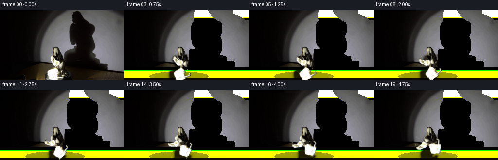
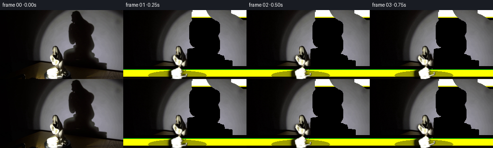
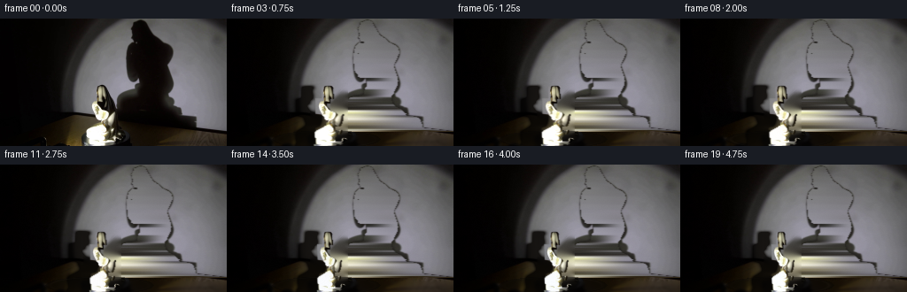
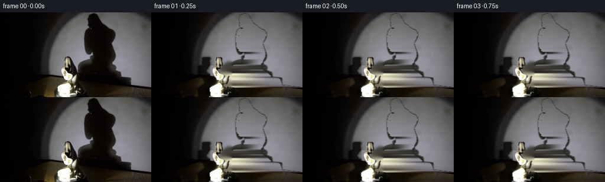

CODING AGENTS AS PIXEL WORLD MODELS
traex/DeepSeek-V4.1-Flash · 0084
点击播放 · 原生 RGB 像素
逐轮保存的候选
回放视频、检查图与代码变化。
每份候选均可单独播放。实际图片检查记录在下方工具轨迹中。
候选 01播放与检查图
点击播放 · 原生 RGB 像素


展开代码变化
--- 上一保存版本
+++ 本次保存版本
@@ -0,0 +1,176 @@
+from pathlib import Path
+
+import cv2
+import numpy as np
+from PIL import Image
+from scipy.ndimage import gaussian_filter
+
+import artifact_io
+
+
+CASE_DIR = Path(__file__).resolve().parent
+W, H, N, FPS = 256, 144, 20, 4
+
+
+def smoothstep(a, b, x):
+ t = np.clip((x - a) / (b - a), 0.0, 1.0)
+ return t * t * (3.0 - 2.0 * t)
+
+
+def clean_plate(src):
+ """Reconstruct a shadow-free wall and an unoccluded floor."""
+ out = src.astype(np.float32).copy()
+ yy, xx = np.mgrid[:H, :W]
+ lum = src.astype(np.float32) @ np.array([0.2126, 0.7152, 0.0722], np.float32)
+
+ # The wall has a smooth studio falloff. Fit it from the lit portion on
+ # the right, where the porcelain and foreground do not intrude.
+ wall = np.empty_like(out)
+ for y in range(0, 128):
+ valid = (xx[y] >= 194) & (lum[y] > 55)
+ xs = xx[y, valid].astype(np.float32)
+ cols = out[y, valid]
+ deg = 3
+ design = np.stack([xs**k for k in range(deg + 1)], axis=1)
+ coef, *_ = np.linalg.lstsq(design, cols, rcond=None)
+ wall[y] = np.stack([np.polyval(coef[:, c], xx[y]) for c in range(3)], axis=1)
+ for y in range(128, H):
+ wall[y] = wall[127]
+ wall = gaussian_filter(wall, sigma=(2.2, 2.0, 0.0))
+
+ # Preserve the gentle vertical light and the very soft wall texture while
+ # replacing only the deep projected shadow.
+ shadow = (lum < 46) & (xx >= 137) & (yy < 128)
+ shadow = cv2.dilate(shadow.astype(np.uint8), np.ones((3, 3), np.uint8)) > 0
+ shadow &= xx >= 138
+ alpha = gaussian_filter(shadow.astype(np.float32), 1.2)
+ wall_tint = wall * np.array([0.985, 0.98, 1.015], np.float32)
+ out = out * (1.0 - alpha[..., None]) + wall_tint * alpha[..., None]
+
+ # Floor: continue the warm reflected light from clean strips around the
+ # bright plinth and remove the moving-object footprints.
+ floor = out.copy()
+ for y in range(120, H):
+ left = out[y, 55:76]
+ right = out[y, 143:184]
+ base = np.concatenate((left, right), axis=0).mean(axis=0)
+ ramp = np.linspace(0.82, 1.04, W, dtype=np.float32)[:, None]
+ floor[y] = base[None, :] * ramp
+ floor = gaussian_filter(floor, sigma=(1.4, 2.0, 0.0))
+ fm = smoothstep(116, 123, yy.astype(np.float32))
+ out = out * (1.0 - fm[..., None]) + floor * fm[..., None]
+ return np.clip(out, 0, 255)
+
+
+def build_object(src):
+ """Extract the bright porcelain figure, with its naturally shaded edge."""
+ lum = src.astype(np.float32) @ np.array([0.2126, 0.7152, 0.0722], np.float32)
+ roi = np.zeros((H, W), np.float32)
+ yy, xx = np.mgrid[:H, :W]
+ local = lum > 142
+ local &= (xx >= 92) & (xx <= 137) & (yy >= 91) & (yy <= 143)
+ local &= ((yy >= 116) | (xx >= 102))
+ local |= (lum > 205) & (xx >= 96) & (xx <= 133) & (yy >= 90) & (yy <= 143)
+ local = cv2.morphologyEx(local.astype(np.uint8), cv2.MORPH_CLOSE, np.ones((3, 3), np.uint8))
+ local = cv2.morphologyEx(local, cv2.MORPH_OPEN, np.ones((2, 2), np.uint8))
+ roi = gaussian_filter(local.astype(np.float32), 0.55)
+ # Keep a small dark contact edge, which makes the porcelain sit on the
+ # platform rather than appear pasted onto it.
+ edge = cv2.dilate((roi > 0.2).astype(np.uint8), np.ones((3, 3), np.uint8))
+ edge = (edge.astype(np.float32) - roi) * 0.28
+ rgba = np.dstack((src.astype(np.float32), np.clip(roi, 0, 1)))
+ rgba[..., :3] *= np.clip(0.92 + 0.08 * roi[..., None], 0, 1)
+ return rgba, np.clip(roi + edge, 0, 1)
+
+
+def rotate_layer(rgba, angle, center, scale=1.0):
+ c = center
+ matrix = cv2.getRotationMatrix2D(c, angle, scale)
+ rot = cv2.warpAffine(rgba, matrix, (W, H), flags=cv2.INTER_LINEAR,
+ borderMode=cv2.BORDER_CONSTANT, borderValue=(0, 0, 0, 0))
+ return rot
+
+
+def composite(base, rgba, light):
+ alpha = rgba[..., 3:4]
+ rgb = rgba[..., :3] * light
+ return base * (1.0 - alpha) + rgb * alpha
+
+
+def wall_shadow(base, mask, t):
+ yy, xx = np.mgrid[:H, :W]
+ # Projection is anchored at the wall/floor seam and leans right.
+ u = (xx - 133.0) / 53.0
+ v = (yy - 126.0) / 113.0
+ # A slowly turning figure narrows and broadens the projected torso while
+ # preserving the head-to-base proportion.
+ phase = 2.0 * np.pi * t / 5.0
+ shear = 0.105 * np.sin(phase + 0.35)
+ sx = u + 0.14 * v + shear * (1.0 - 0.5 * v)
+ sy = v + 0.018 * np.sin(phase + 0.9) * u
+ mx = np.clip(sx * 53.0 + 133.0, 0, W - 1).astype(np.float32)
+ my = np.clip(sy * 113.0 + 126.0, 0, H - 1).astype(np.float32)
+ shadow = cv2.remap(mask.astype(np.float32), mx, my, cv2.INTER_LINEAR,
+ borderMode=cv2.BORDER_CONSTANT, borderValue=0)
+ shadow = gaussian_filter(shadow, sigma=(1.35, 2.3))
+ shadow = np.clip(shadow * 1.65, 0, 1)
+ # The shadow is broad and soft, darkest toward the center.
+ soft = gaussian_filter(shadow, sigma=(5.5, 7.0))
+ strength = np.clip(0.94 * shadow + 0.25 * soft, 0, 0.98)
+ shadow_rgb = base * np.array([0.17, 0.15, 0.13], np.float32)
+ return base * (1.0 - strength[..., None]) + shadow_rgb * strength[..., None]
+
+
+def platform(base, t):
+ out = base.copy()
+ yy, xx = np.mgrid[:H, :W]
+ cx, cy = 112.0, 136.0
+ phase = 2.0 * np.pi * t / 5.0
+ # Elliptical black platform with a restrained moving rim highlight.
+ q = ((xx - cx) / 61.0) ** 2 + ((yy - cy) / 10.2) ** 2
+ disk = q <= 1.0
+ rim = np.exp(-((np.sqrt(np.maximum(q, 0)) - 0.91) / 0.035) ** 2)
+ rim *= disk
+ angle = np.arctan2((yy - cy) / 10.2, (xx - cx) / 61.0)
+ sweep = 0.28 + 0.72 * np.clip(np.cos(angle - phase - 0.35), 0, 1) ** 5
+ shade = np.array([5.0, 4.2, 3.5], np.float32)
+ out = out * (1.0 - disk[..., None] * 0.38) + shade * (disk[..., None] * 0.38)
+ out += (rim * sweep * 6.2)[..., None] * np.array([1.0, 0.91, 0.72], np.float32)
+ # Floor contact glow changes a little as the object turns.
+ contact = np.exp(-(((xx - (111 + 2.2 * np.sin(phase))) / 17.0) ** 2 +
+ ((yy - 123.0) / 3.0) ** 2))
+ out += (contact * (1.0 + 0.8 * np.sin(phase + 0.2)))[..., None] * np.array([7, 6, 4], np.float32)
+ return np.clip(out, 0, 255)
+
+
+def make_frames():
+ src = np.asarray(Image.open(CASE_DIR / "first_frame.png").convert("RGB"), dtype=np.uint8)
+ clean = clean_plate(src)
+ obj, silhouette = build_object(src)
+ frames = []
+ center = (111.0, 117.0)
+ for i in range(N):
+ t = i / FPS
+ base = clean.copy()
+ base = wall_shadow(base, silhouette, t)
+ base = platform(base, t)
+ # Quarter-turn across five seconds. Scale modulation adds a slight
+ # perspective change from the asymmetric porcelain body.
+ angle = 90.0 * t / 5.0
+ scale = 1.0 + 0.017 * np.sin(2.0 * np.pi * t / 5.0 + 0.4)
+ rgba = rotate_layer(obj, angle, center, scale)
+ light = np.array([1.0 + 0.018 * np.sin(2 * np.pi * t / 5),
+ 1.0 + 0.012 * np.sin(2 * np.pi * t / 5 + 0.5),
+ 1.0 + 0.008 * np.cos(2 * np.pi * t / 5)], np.float32)
+ frame = composite(base, rgba, light)
+ # A quiet studio grain prevents reconstructed regions looking synthetic.
+ rng = np.random.default_rng(8400 + i)
+ grain = rng.normal(0.0, 0.38, (H, W, 1)).astype(np.float32)
+ frame = frame + grain * (0.35 + 0.65 * (frame.mean(axis=2, keepdims=True) / 120.0))
+ frames.append(np.clip(frame, 0, 255).astype(np.uint8))
+ frames[0] = src.copy()
+ return np.stack(frames)
+
+
+if __name__ == "__main__":
+ artifact_io.save(make_frames(), CASE_DIR)
候选 02播放与检查图
点击播放 · 原生 RGB 像素


展开代码变化
--- 上一保存版本
+++ 本次保存版本
@@ -18,62 +18,83 @@
def clean_plate(src):
- """Reconstruct a shadow-free wall and an unoccluded floor."""
+ """Reconstruct the studio background behind the statue and wall shadow."""
out = src.astype(np.float32).copy()
yy, xx = np.mgrid[:H, :W]
lum = src.astype(np.float32) @ np.array([0.2126, 0.7152, 0.0722], np.float32)
- # The wall has a smooth studio falloff. Fit it from the lit portion on
- # the right, where the porcelain and foreground do not intrude.
- wall = np.empty_like(out)
+ # Isolate the large wall shadow. Its left and right neighbors give the
+ # local light level on every scanline, so interpolation across the gap is
+ # stable even where the studio light has a strong horizontal falloff.
+ dark = (lum < 32).astype(np.uint8)
+ n, labels, stats, _ = cv2.connectedComponentsWithStats(dark, 8)
+ shadow_label = 0
+ for label in range(1, n):
+ x, y, w, h, area = stats[label]
+ if area > 2000 and x > 100:
+ shadow_label = label
+ break
+ shadow = labels == shadow_label
+ shadow &= yy < 128
+
for y in range(0, 128):
- valid = (xx[y] >= 194) & (lum[y] > 55)
- xs = xx[y, valid].astype(np.float32)
- cols = out[y, valid]
- deg = 3
- design = np.stack([xs**k for k in range(deg + 1)], axis=1)
- coef, *_ = np.linalg.lstsq(design, cols, rcond=None)
- wall[y] = np.stack([np.polyval(coef[:, c], xx[y]) for c in range(3)], axis=1)
- for y in range(128, H):
- wall[y] = wall[127]
- wall = gaussian_filter(wall, sigma=(2.2, 2.0, 0.0))
-
- # Preserve the gentle vertical light and the very soft wall texture while
- # replacing only the deep projected shadow.
- shadow = (lum < 46) & (xx >= 137) & (yy < 128)
- shadow = cv2.dilate(shadow.astype(np.uint8), np.ones((3, 3), np.uint8)) > 0
- shadow &= xx >= 138
- alpha = gaussian_filter(shadow.astype(np.float32), 1.2)
- wall_tint = wall * np.array([0.985, 0.98, 1.015], np.float32)
- out = out * (1.0 - alpha[..., None]) + wall_tint * alpha[..., None]
-
- # Floor: continue the warm reflected light from clean strips around the
- # bright plinth and remove the moving-object footprints.
- floor = out.copy()
- for y in range(120, H):
- left = out[y, 55:76]
- right = out[y, 143:184]
- base = np.concatenate((left, right), axis=0).mean(axis=0)
- ramp = np.linspace(0.82, 1.04, W, dtype=np.float32)[:, None]
- floor[y] = base[None, :] * ramp
- floor = gaussian_filter(floor, sigma=(1.4, 2.0, 0.0))
- fm = smoothstep(116, 123, yy.astype(np.float32))
- out = out * (1.0 - fm[..., None]) + floor * fm[..., None]
+ row = shadow[y]
+ if not row.any():
+ continue
+ runs = []
+ start = None
+ for x in range(126, W + 1):
+ active = x < W and row[x]
+ if active and start is None:
+ start = x
+ elif not active and start is not None:
+ if x - start >= 3:
+ runs.append((start, x - 1))
+ start = None
+ for x0, x1 in runs:
+ left = out[y, max(105, x0 - 14):max(106, x0 - 2)]
+ right = out[y, min(W - 1, x1 + 2):min(W, x1 + 14)]
+ left = left[(left @ np.array([.2126, .7152, .0722])) > 25]
+ right = right[(right @ np.array([.2126, .7152, .0722])) > 25]
+ samples = np.concatenate((left, right), axis=0)
+ if len(samples) == 0:
+ continue
+ c0 = np.median(left, axis=0) if len(left) else np.median(samples, axis=0)
+ c1 = np.median(right, axis=0) if len(right) else np.median(samples, axis=0)
+ t = np.linspace(0.0, 1.0, x1 - x0 + 1, dtype=np.float32)[:, None]
+ t = t * t * (3.0 - 2.0 * t)
+ out[y, x0:x1 + 1] = c0[None, :] * (1.0 - t) + c1[None, :] * t
+ out[:128] = gaussian_filter(out[:128], sigma=(0.45, 0.7, 0.0))
+
+ # Remove the statue from the clean plate. The mask is deliberately a
+ # little larger than the bright porcelain so its shaded rim and contact
+ # area do not leave a ghost when it turns.
+ obj = np.zeros((H, W), np.uint8)
+ obj[73:144, 94:137] = 1
+ obj[:73] = 0
+ out = cv2.inpaint(np.clip(out, 0, 255).astype(np.uint8), obj, 5, cv2.INPAINT_TELEA).astype(np.float32)
+ out[132:144] = gaussian_filter(out[132:144], sigma=(1.0, 1.8, 0.0))
return np.clip(out, 0, 255)
def build_object(src):
"""Extract the bright porcelain figure, with its naturally shaded edge."""
lum = src.astype(np.float32) @ np.array([0.2126, 0.7152, 0.0722], np.float32)
- roi = np.zeros((H, W), np.float32)
- yy, xx = np.mgrid[:H, :W]
- local = lum > 142
- local &= (xx >= 92) & (xx <= 137) & (yy >= 91) & (yy <= 143)
- local &= ((yy >= 116) | (xx >= 102))
- local |= (lum > 205) & (xx >= 96) & (xx <= 133) & (yy >= 90) & (yy <= 143)
- local = cv2.morphologyEx(local.astype(np.uint8), cv2.MORPH_CLOSE, np.ones((3, 3), np.uint8))
+ yy, xx = np.mgrid[:H, :W]
+ local = lum > 108
+ local &= (xx >= 96) & (xx <= 134) & (yy >= 74) & (yy <= 143)
+ local &= ((yy >= 88) | ((xx >= 105) & (xx <= 119)))
+ local &= ((yy >= 119) | (xx >= 98))
+ local = cv2.morphologyEx(local.astype(np.uint8), cv2.MORPH_CLOSE, np.ones((4, 4), np.uint8))
local = cv2.morphologyEx(local, cv2.MORPH_OPEN, np.ones((2, 2), np.uint8))
- roi = gaussian_filter(local.astype(np.float32), 0.55)
+ # Keep only the component that contains the porcelain body.
+ n, lab, stats, _ = cv2.connectedComponentsWithStats(local, 8)
+ chosen = np.zeros_like(local)
+ for i in range(1, n):
+ x, y, w, h, area = stats[i]
+ if area > 80 and x < 125 and y < 120:
+ chosen[lab == i] = 1
+ roi = gaussian_filter(chosen.astype(np.float32), 0.55)
# Keep a small dark contact edge, which makes the porcelain sit on the
# platform rather than appear pasted onto it.
edge = cv2.dilate((roi > 0.2).astype(np.uint8), np.ones((3, 3), np.uint8))
@@ -85,7 +106,14 @@
def rotate_layer(rgba, angle, center, scale=1.0):
c = center
- matrix = cv2.getRotationMatrix2D(c, angle, scale)
+ # A turntable changes apparent width and slight lateral parallax. It does
+ # not tilt an upright statue inside the image plane.
+ theta = np.deg2rad(angle)
+ sx = scale * (0.78 + 0.22 * np.cos(theta))
+ shear = 0.035 * np.sin(theta)
+ dx = 1.4 * np.sin(theta)
+ matrix = np.array([[sx, shear, c[0] * (1.0 - sx) - shear * c[1] + dx],
+ [0.0, 1.0, 0.0]], np.float32)
rot = cv2.warpAffine(rgba, matrix, (W, H), flags=cv2.INTER_LINEAR,
borderMode=cv2.BORDER_CONSTANT, borderValue=(0, 0, 0, 0))
return rot
@@ -99,21 +127,20 @@
def wall_shadow(base, mask, t):
yy, xx = np.mgrid[:H, :W]
- # Projection is anchored at the wall/floor seam and leans right.
- u = (xx - 133.0) / 53.0
- v = (yy - 126.0) / 113.0
- # A slowly turning figure narrows and broadens the projected torso while
- # preserving the head-to-base proportion.
+ # Projection from the statue onto the wall: the upright figure becomes a
+ # tall silhouette displaced right, with its base anchored near the seam.
+ u = (xx - 113.0) / 64.0
+ v = (yy - 126.0) / 124.0
phase = 2.0 * np.pi * t / 5.0
- shear = 0.105 * np.sin(phase + 0.35)
- sx = u + 0.14 * v + shear * (1.0 - 0.5 * v)
- sy = v + 0.018 * np.sin(phase + 0.9) * u
- mx = np.clip(sx * 53.0 + 133.0, 0, W - 1).astype(np.float32)
- my = np.clip(sy * 113.0 + 126.0, 0, H - 1).astype(np.float32)
+ shear = 0.045 * np.sin(phase + 0.35)
+ sx = u * (1.03 + 0.10 * np.cos(phase)) + 0.34 + shear * (1.0 - 0.5 * v)
+ sy = v + 0.014 * np.sin(phase + 0.9) * u
+ mx = np.clip(sx * 64.0 + 113.0, 0, W - 1).astype(np.float32)
+ my = np.clip(sy * 124.0 + 126.0, 0, H - 1).astype(np.float32)
shadow = cv2.remap(mask.astype(np.float32), mx, my, cv2.INTER_LINEAR,
borderMode=cv2.BORDER_CONSTANT, borderValue=0)
- shadow = gaussian_filter(shadow, sigma=(1.35, 2.3))
- shadow = np.clip(shadow * 1.65, 0, 1)
+ shadow = gaussian_filter(shadow, sigma=(1.15, 2.0))
+ shadow = np.clip(shadow * 1.55, 0, 1)
# The shadow is broad and soft, darkest toward the center.
soft = gaussian_filter(shadow, sigma=(5.5, 7.0))
strength = np.clip(0.94 * shadow + 0.25 * soft, 0, 0.98)
可观测工具轨迹
实际执行的命令与返回图片。
命令 1exit 0
/bin/bash -c "pwd && rg --files -g '"'!*__pycache__*'"' | sed -n '1,160p'"
命令 2exit 0
/bin/bash -c "sed -n '1,240p' prompt.txt"
命令 3exit 0
/bin/bash -c "sed -n '1,280p' GENERATION_RULES.md"
命令 4exit 0
/bin/bash -c 'ls -la && file first_frame.png && identify first_frame.png 2>/dev/null || true'
命令 5exit 0
/bin/bash -c "sed -n '1,260p' artifact_io.py"
命令 6exit 0
/bin/bash -c "sed -n '1,260p' player_template.html"
命令 7exit 0
/bin/bash -c "python - <<'PY'
from PIL import Image
import numpy as np
im=Image.open('first_frame.png').convert('RGB')
a=np.array(im)
print(im.size, a.shape, a.dtype, a.min(), a.max(), a.mean(axis=(0,1)), a.std(axis=(0,1)))
# grid stats 8x8 coarse luminance and color
lum=a@np.array([.2126,.7152,.0722])
for y in range(0,144,12):
vals=[]
for x in range(0,256,16):
p=lum[y:min(y+12,144),x:min(x+16,256)]
vals.append(f'{p.mean():3.0f}')
print(f'y={y:3d}: '+' '.join(vals))
# top frequent colors
cols,cnt=np.unique(a.reshape(-1,3),axis=0,return_counts=True)
for i in np.argsort(cnt)[-25:][::-1]: print(cnt[i],cols[i])
PY"命令 8exit 0
/bin/bash -c "python - <<'PY'
from PIL import Image
import numpy as np
a=np.array(Image.open('first_frame.png').convert('RGB')).astype(float)
Y=a@np.array([.2126,.7152,.0722])
# ascii luminance 128x72, chars
chars=' .,:;irsXA253hMHGS#9B&@'
for y in range(0,144,2):
row=''
for x in range(0,256,2):
v=Y[y:y+2,x:x+2].mean()
idx=int(np.clip(v/256*len(chars),0,len(chars)-1))
row+=chars[idx]
print(f'{y:03d} {row}')
PY"命令 9exit 0
/bin/bash -c "python - <<'PY'
from PIL import Image
import numpy as np
a=np.array(Image.open('first_frame.png').convert('RGB')).astype(int)
# classify by hue/value coarse
mx=a.max(2); mn=a.min(2); sat=mx-mn
Y=a@np.array([.2126,.7152,.0722])
# Print coarse RGB at every 16 x 12 using median to reveal composition
for y in range(6,144,12):
row=[]
for x in range(8,256,16):
p=np.median(a[max(0,y-3):min(144,y+4),max(0,x-3):min(256,x+4)],axis=(0,1)).astype(int)
row.append(f'{p[0]:02x}{p[1]:02x}{p[2]:02x}')
print(f'{y:3d}', ' '.join(row))
# bounding bright masks
for t in [30,60,100,140,180,220]:
m=Y>t
ys,xs=np.where(m)
print(t,len(xs), (xs.min(),ys.min(),xs.max(),ys.max()) if len(xs) else None)
# per columns/rows bright extents threshold 80
for x in range(0,256,8):
m=Y[:,x]>80
if m.any():
ys=np.where(m)[0]; print('col',x,'Y',Y[:,x].mean(),'range',ys.min(),ys.max(),'n',len(ys))
PY"命令 10exit 0
/bin/bash -c "python - <<'PY'
from PIL import Image
import numpy as np
im=Image.open('first_frame.png').convert('RGB')
a=np.array(im)
# Save enlarged source in .tmp for internal numeric inspection through repeated blocks
im.resize((1024,576),Image.Resampling.NEAREST).save('.tmp/source_4x.png')
# Edge maps with Sobel-like gradient using PIL filters, and posterized color regions
import PIL.ImageFilter as F
g=im.convert('L').filter(F.FIND_EDGES)
g.point(lambda v:255 if v>25 else 0).resize((1024,576),Image.Resampling.NEAREST).save('.tmp/edges.png')
# rough object candidates: non-gray pixels in central region, plus bright porcelain
hsv=np.array(im.convert('HSV'))
print('HSV means',hsv.mean((0,1)))
# inspect RGB top 20 brightest positions and gray samples
Y=a@np.array([.2126,.7152,.0722]); flat=np.argsort(Y.ravel())[-30:][::-1]
for i in flat[:20]: print(divmod(int(i),256)[1],divmod(int(i),256)[0],a.reshape(-1,3)[i])
PY"命令 11exit 0
/bin/bash -c "python - <<'PY'
from PIL import Image
import numpy as np
im=Image.open('first_frame.png').convert('RGB'); a=np.array(im)
# kmeans manually using cv2? scipy? sklearn maybe
try:
from sklearn.cluster import KMeans
X=a.reshape(-1,3).astype(float)
km=KMeans(n_clusters=10,random_state=0,n_init=4).fit(X)
c=km.cluster_centers_.astype(int); lab=km.labels_.reshape(144,256)
print('centers',c)
# print coarse majority labels
chars='0123456789'
for y in range(0,144,4):
s=''
for x in range(0,256,4):
vals,cnts=np.unique(lab[y:y+4,x:x+4],return_counts=True); s+=chars[vals[cnts.argmax()]]
print(f'{y:03d}',s)
except Exception as e: print(e)
PY"命令 12exit 0
/bin/bash -c "python - <<'PY'
from PIL import Image
import numpy as np
a=np.array(Image.open('first_frame.png').convert('RGB')).astype(float)
# output selected patches as numeric 2x2 stats, region of statue 95:145 x 75:145
for y in range(0,144,4):
vals=[]
for x in range(0,256,4):
p=a[y:y+4,x:x+4].mean((0,1)); Y=p@np.array([.2126,.7152,.0722]); sat=p.max()-p.min()
if Y>100: ch='@'
elif Y>60: ch='#'
elif Y>30: ch='*'
elif Y>12: ch='.'
else: ch=' '
vals.append(ch)
print(f'{y:03d} '+''.join(vals))
PY"命令 13exit 0
/bin/bash -c "python - <<'PY'
from PIL import Image
import numpy as np
a=np.array(Image.open('first_frame.png').convert('RGB')).astype(float)
# colored centers manually inspect local regions by saturation and luminance
Y=a@np.array([.2126,.7152,.0722]); sat=a.max(2)-a.min(2)
# summarize candidate masks
for name,m in [
('bright',Y>180),('warm bright',(Y>100)&(a[:,:,0]>a[:,:,2]*1.15)),('warm dark',(Y>20)&(Y<100)&(a[:,:,0]>a[:,:,2]*1.25)),('gray mid',(Y>40)&(Y<150)&(sat<18)),('red',(a[:,:,0]>a[:,:,1]*1.3)&(a[:,:,0]>a[:,:,2]*1.3)&(Y>15))]:
ys,xs=np.where(m)
print(name,len(xs), (xs.min(),ys.min(),xs.max(),ys.max()) if len(xs) else None)
# sample blocks where warm
for y in range(0,144,8):
s=''
for x in range(0,256,4):
p=a[y:y+8,x:x+4].mean((0,1)); Yv=p@np.array([.2126,.7152,.0722]); r,g,b=p
if Yv<12: ch=' '
elif r>1.4*g and r>1.3*b: ch='R'
elif r>1.15*g and r>1.15*b: ch='r'
elif max(p)-min(p)<12 and Yv>70: ch='W'
elif Yv>140: ch='@'
elif Yv>80: ch='#'
elif Yv>40: ch='*'
else: ch='.'
s+=ch
print(f'{y:03d}',s)
PY"命令 14exit 0
/bin/bash -c "python - <<'PY'
from PIL import Image
import numpy as np
a=np.array(Image.open('first_frame.png').convert('RGB'))
# mean and percentile values for x columns and y rows in key regions
for name,(x0,x1,y0,y1) in {'bgleft':(0,50,0,144),'subject':(50,150,0,110),'wall':(150,256,0,120),'floor':(0,256,120,144),'statue':(88,136,70,144)}.items():
p=a[y0:y1,x0:x1].reshape(-1,3)
print(name,'mean',p.mean(0),'p10/50/90',np.percentile(p,[10,50,90],axis=0))
# exact rows color sequence samples
for y in [0,30,60,90,110,120,126,130,140]:
print('row',y,[(x,a[y,x].tolist()) for x in [40,50,60,70,80,90,100,110,120,130,140,150,160,180,200,220,240,255]])
PY"命令 15exit 0
/bin/bash -c "python - <<'PY'
from PIL import Image
import numpy as np
im=Image.open('first_frame.png').convert('RGB'); a=np.array(im).astype(float)
Y=a@np.array([.2126,.7152,.0722])
# gradient with shifts
gx=np.zeros_like(Y); gy=np.zeros_like(Y)
gx[:,1:-1]=Y[:,2:]-Y[:,:-2]; gy[1:-1]=Y[2:]-Y[:-2]
g=np.hypot(gx,gy)
chars=' .:-=+*#%@'
for y in range(0,144,2):
s=''
for x in range(0,256,2):
v=np.percentile(g[y:y+2,x:x+2],75)
# log scale
idx=int(np.clip(np.log1p(v)/np.log1p(200)*len(chars),0,len(chars)-1))
s+=chars[idx]
print(f'{y:03d} {s}')
PY"命令 16exit 0
/bin/bash -c "python - <<'PY'
from PIL import Image
import numpy as np
a=np.array(Image.open('first_frame.png').convert('RGB')).astype(float)
Y=a@np.array([.2126,.7152,.0722])
# ascii exact x range 40:160, y 60:144 with chars, sampled 1px each horizontal 2 chars? use block 1x2
chars=' .,:;irsXA253hMHGS#9B&@'
for y in range(55,144):
s=''
for x in range(35,165):
v=Y[y,x]
idx=int(np.clip(v/256*len(chars),0,len(chars)-1))
s+=chars[idx]
print(f'{y:03d} {s}')
PY"命令 17exit 0
/bin/bash -c "python - <<'PY'
from PIL import Image
import numpy as np
a=np.array(Image.open('first_frame.png').convert('RGB')).astype(int)
Y=a@np.array([.2126,.7152,.0722])
# print coordinate-ruled threshold contour at 4px resolution central crop x 80..160 y 60..144
for y in range(60,144,2):
s=''
for x in range(80,160,2):
p=a[y:y+2,x:x+2].mean((0,1)); yy=p@np.array([.2126,.7152,.0722])
s += '@' if yy>200 else '#' if yy>130 else '*' if yy>70 else '.' if yy>25 else ' '
print(f'{y:03d} {s}')
# stats for exact crop of statue likely 95:130 x 70:144
PY"命令 18exit 0
/bin/bash -c "python - <<'PY'
from PIL import Image
import numpy as np
im=Image.open('first_frame.png').convert('RGB'); a=np.array(im).astype(float)
# make a montage-like numeric crop at 4x with labels? no visual. inspect likely silhouette masks by color segmentation.
# likely statue material warm beige/gold around x90-135 y75-143
Y=a@np.array([.2126,.7152,.0722]); sat=a.max(2)-a.min(2)
# print RGB in 2px blocks around statue: char material groups
for y in range(68,144,2):
s=''
for x in range(88,140,2):
p=a[y:y+2,x:x+2].mean((0,1)); yy=p@np.array([.2126,.7152,.0722]); r,g,b=p
if yy>235: ch='@'
elif yy>180: ch='#'
elif yy>120: ch='*'
elif yy>60: ch='+'
elif yy>20: ch='.'
else: ch=' '
s+=ch
print(f'{y:03d} {s}')
# print exact RGB matrix sample selected
for y in range(90,130,5):
print('y',y,[(x,a[y,x].astype(int).tolist()) for x in range(95,136,5)])
PY"命令 19exit 0
/bin/bash -c "python - <<'PY'
from PIL import Image
import numpy as np
a=np.array(Image.open('first_frame.png').convert('RGB'))
# 2x block mean crops as PPM-like maybe convert to text indexed colors.
# Identify connected bright regions with scipy
from scipy.ndimage import label
Y=a.astype(float)@np.array([.2126,.7152,.0722])
for t in [180,200,230,245]:
m=Y>t; lab,n=label(m)
comps=[]
for i in range(1,n+1):
ys,xs=np.where(lab==i)
if len(xs)>3: comps.append((len(xs),xs.min(),ys.min(),xs.max(),ys.max(),xs.mean(),ys.mean()))
print('threshold',t,sorted(comps,reverse=True)[:20])
PY"命令 20exit 0
/bin/bash -c "python - <<'PY'
from PIL import Image
import numpy as np
a=np.array(Image.open('first_frame.png').convert('RGB')).astype(float)
Y=a@np.array([.2126,.7152,.0722])
for y in range(100,144):
# print contiguous runs of luminance bins x=70..180
vals=Y[y,70:181]
bins=np.digitize(vals,[8,20,40,70,110,160,210])
s=''.join(' .:-=+*#'[b] for b in bins)
print(f'{y:03d} {s}')
print('bottom object per x: bright rows and ranges')
for x in range(90,141,2):
m=Y[:,x]>160
if m.any():
ys=np.where(m)[0]; print(x,ys.min(),ys.max(),len(ys),round(Y[:,x].max()))
PY"命令 21exit 0
/bin/bash -c "python - <<'PY'
from PIL import Image
im=Image.open('first_frame.png')
print(im.info)
print(im.getbbox(),im.mode)
PY"命令 22exit 0
/bin/bash -c "python - <<'PY'
from PIL import Image
import numpy as np
a=np.array(Image.open('first_frame.png').convert('RGB')).astype(float)
Y=a@np.array([.2126,.7152,.0722])
# inspect crop 70:180,95:144 exact 2px blocks with color category and luminance
chars=' .,:;irsXA253hMHGS#9B&@'
for y in range(95,144,2):
s=''
for x in range(70,180,2):
p=a[y:y+2,x:x+2].mean((0,1)); yy=p@np.array([.2126,.7152,.0722]);
# print numeric hex of grayscale? use luminance chars
s+=chars[min(len(chars)-1,int(yy/256*len(chars)))]
print(f'{y:03d} {s}')
PY"命令 23exit 0
/bin/bash -c "python - <<'PY'
from PIL import Image
import numpy as np
a=np.array(Image.open('first_frame.png').convert('RGB')).astype(int)
# row/col ranges of likely object around bright region, compare with local background via differences
Y=a@np.array([.2126,.7152,.0722])
# print quantized hue-ish for central crop using symbols by RGB ratios
for y in range(72,144,2):
s=''
for x in range(80,145,2):
p=a[y:y+2,x:x+2].mean((0,1)); r,g,b=p
if p.max()<10: ch=' '
elif r>g*1.25 and r>b*1.25: ch='R'
elif r>g*1.08 and r>b*1.12: ch='y'
elif max(p)-min(p)<10: ch='w'
elif max(p)-min(p)<20: ch='g'
else: ch='?'
s+=ch
print(f'{y:03d} {s}')
PY"命令 24exit 0
/bin/bash -c "python - <<'PY'
from PIL import Image
import numpy as np
from scipy.ndimage import label, binary_opening
a=np.array(Image.open('first_frame.png').convert('RGB')).astype(float)
Y=a@np.array([.2126,.7152,.0722])
# print runs by row for Y<20, between wall region x120:256; and >80
for y in range(0,144,4):
for cond,name in [(Y[y]<20,'dark'),(Y[y]>80,'lit')]:
m=cond[120:256]
runs=[]; st=None
for i,v in enumerate(np.r_[m,False]):
if v and st is None: st=i
if not v and st is not None:
if i-st>=3:runs.append((120+st,120+i-1))
st=None
print(f'y{y:03d} {name}:',runs)
PY"命令 25exit 0
/bin/bash -c "python - <<'PY'
from PIL import Image
import numpy as np
from scipy.ndimage import gaussian_filter
a=np.array(Image.open('first_frame.png').convert('RGB')).astype(float)
Y=a@np.array([.2126,.7152,.0722])
# print low-res color luminance field with exact values for wall x140..255 y0..128
for y in range(0,130,4):
s=''
for x in range(140,256,4):
p=Y[y:y+4,x:x+4].mean()
s += ' ' if p<8 else '.' if p<20 else ':' if p<40 else '-' if p<70 else '=' if p<100 else '+' if p<130 else '*' if p<160 else '#' if p<190 else '@'
print(f'{y:03d} {s}')
PY"命令 26exit 1
/bin/bash -c "python - <<'PY'
from PIL import Image
import numpy as np
a=np.array(Image.open('first_frame.png').convert('RGB')).astype(float)
Y=a@np.array([.2126,.7152,.0722])
# exact dark shadow boundary x for y by scanning right of 150 for first lit after dark, x 150..200
for y in range(0,145,2):
row=Y[y]
# find ranges under 20 from x145 onward
runs=[]; st=None
for x in range(145,210):
if row[x]<20 and st is None:st=x
if (row[x]>=20 or x==209) and st is not None:
en=x-1 if row[x]>=20 else x
if en-st>=2:runs.append((st,en))
st=None
print(y,runs)
PY"命令 27exit 0
/bin/bash -c "python - <<'PY'
from PIL import Image
import numpy as np
from sklearn.cluster import KMeans
im=Image.open('first_frame.png').convert('RGB'); a=np.array(im)
# ROI around statue
x0,x1,y0,y1=88,136,70,144
p=a[y0:y1,x0:x1].reshape(-1,3).astype(float)
km=KMeans(n_clusters=8,random_state=1,n_init=10).fit(p)
print(km.cluster_centers_.astype(int))
print(np.bincount(km.labels_))
# map label positions 2px blocks
lab=km.labels_.reshape(y1-y0,x1-x0)
for yy in range(0,y1-y0,2):
s=''
for xx in range(0,x1-x0,2):
vals,c=np.unique(lab[yy:yy+2,xx:xx+2],return_counts=True); s+=str(vals[c.argmax()])
print(f'{y0+yy:03d} {s}')
PY"命令 28exit 0
/bin/bash -c "python - <<'PY'
from PIL import Image
import numpy as np
from scipy.ndimage import median_filter
a=np.array(Image.open('first_frame.png').convert('RGB')).astype(float)
Y=a@np.array([.2126,.7152,.0722])
# Show luminance with coordinates x 85..140 y70..144 using hex values rounded 16
for y in range(70,144,2):
s=''
for x in range(85,141,2):
v=np.mean(Y[y:y+2,x:x+2]); s+=f'{int(v)//16:x}'
print(f'{y:03d} {s}')
PY"命令 29exit 0
/bin/bash -c "python - <<'PY'
from PIL import Image
import numpy as np
from scipy.ndimage import gaussian_filter
a=np.array(Image.open('first_frame.png').convert('RGB')).astype(float)
Y=a@np.array([.2126,.7152,.0722])
# background lighting field by horizontal median per row, then compare. Print D = Y - row median
med=np.median(Y,axis=1)
# focus x 80-150 and y 70-144, chars of residual
chars=' .:-=+*#%@'
for y in range(70,144,2):
s=''
for x in range(80,152,2):
v=(Y[y:y+2,x:x+2].mean()-med[y:y+2].mean())
s+=chars[int(np.clip((v+40)/160*len(chars),0,len(chars)-1))]
print(f'{y:03d} {s}')
PY"命令 30exit 0
/bin/bash -c "python - <<'PY'
from PIL import Image
import numpy as np
a=np.array(Image.open('first_frame.png').convert('RGB')).astype(float)
Y=a@np.array([.2126,.7152,.0722])
# print luminance values for suspected pedestal/base x80..145 y100..144 as matrix using glyphs thresholds
for y in range(95,144):
s=''
for x in range(75,145):
v=Y[y,x]
s += ' ' if v<5 else '.' if v<15 else ':' if v<30 else '-' if v<50 else '=' if v<75 else '+' if v<105 else '*' if v<140 else '#' if v<190 else '@'
print(f'{y:03d} {s}')
PY"命令 31exit 0
/bin/bash -c "python - <<'PY'
from PIL import Image
import numpy as np
a=np.array(Image.open('first_frame.png').convert('RGB')).astype(float)
Y=a@np.array([.2126,.7152,.0722]); S=a.max(2)-a.min(2)
# region x80:145 y105:144 print 1 char per px threshold, warm vs white
for y in range(105,144):
s=''
for x in range(80,145):
v=Y[y,x]; r,g,b=a[y,x]
if v>235: ch='@'
elif v>190: ch='#'
elif v>140: ch='*'
elif v>90: ch='+'
elif v>50: ch='='
elif v>25: ch='-'
elif v>10: ch=':'
elif v>3: ch='.'
else: ch=' '
s+=ch
print(f'{y:03d} {s}')
print('columns bounds >120')
for x in range(80,145):
m=Y[105:,x]>120
if m.any():
ys=np.where(m)[0]+105
print(x,ys.min(),ys.max(),len(ys))
PY"命令 32exit 0
/bin/bash -c "python - <<'PY'
from PIL import Image
import numpy as np
from scipy.ndimage import gaussian_filter
a=np.array(Image.open('first_frame.png').convert('RGB')).astype(float)
Y=a@np.array([.2126,.7152,.0722]); S=a.max(2)-a.min(2)
# Try find object mask via difference from vertical median in x 70..160
for x in [95,100,105,110,115,120,125,130,135,140]:
print('x',x,'Y',[(y,int(Y[y,x])) for y in range(70,144,4)])
# report likely silhouette at y 122 etc based on > threshold
PY"命令 33exit 0
/bin/bash -c "python - <<'PY'
from PIL import Image
import numpy as np
a=np.array(Image.open('first_frame.png').convert('RGB')).astype(int)
# print material map for x80-150 y65-144, block 1 px char based brightness and warmth
for y in range(65,144):
s=''
for x in range(75,151):
r,g,b=a[y,x]; Y=.2126*r+.7152*g+.0722*b; w=(r-b)
if Y<4: c=' '
elif Y<12: c='.'
elif Y<25: c=':'
elif Y<50: c='-'
elif Y<90: c='='
elif Y<140: c='+'
elif Y<190: c='*'
elif Y<235: c='#'
else: c='@'
# lower-case indicates warm (r>b by >15)
if Y>=12 and w>20: c=c.lower() if c"'!='"'@' else 'W'
s+=c
print(f'{y:03d} {s}')
PY"命令 34exit 0
/bin/bash -c "python - <<'PY'
from PIL import Image
import numpy as np
a=np.array(Image.open('first_frame.png').convert('RGB')).astype(float)
# evaluate whether background wall is largely grayscale and shadow changes via ratio; print RGB in shadow vs adjacent at same y
for y in [20,50,80,110,125]:
for x in [150,160,170,180,190,200,210,220,240]:
print(f'{y},{x}:',a[y,x].astype(int).tolist(),end='; ')
print()
PY"命令 35exit 0
/bin/bash -c "python - <<'PY'
from PIL import Image
import numpy as np
a=np.array(Image.open('first_frame.png').convert('RGB')).astype(float)
Y=a@np.array([.2126,.7152,.0722])
# print image in ANSI truecolor half blocks? We can infer visually maybe terminal supports. Use ANSI background 2 chars; output limited 256*? maybe not visible in transcript but raw escapes.
# generate HTML/text not helpful. Print silhouette mask for statue by locally high luminance within x85:140 y75:144
for t in [100,140,170,200,230]:
print('\\nthr',t)
for y in range(70,144,2):
s=''
for x in range(80,145,1):
s += '#' if Y[y:y+2,x].mean()>t else ' '
print(s)
PY"命令 36exit 0
/bin/bash -c "python - <<'PY'
from PIL import Image
import numpy as np
a=np.array(Image.open('first_frame.png').convert('RGB')).astype(float); Y=a@np.array([.2126,.7152,.0722])
for t in [80,120,160,200]:
print('THR',t)
for y in range(65,144,2):
m=(Y[y:y+2,85:145]>t).any(0)
runs=[]; st=None
for i,v in enumerate(np.r_[m,False]):
if v and st is None: st=i
if not v and st is not None:
if i-st>=2:runs.append((85+st,85+i-1))
st=None
print(f'{y:03d}',runs)
PY"命令 37exit 0
/bin/bash -c "python - <<'PY'
from PIL import Image
import numpy as np
a=np.array(Image.open('first_frame.png').convert('RGB')).astype(float)
Y=a@np.array([.2126,.7152,.0722])
# 2x2 mean map over full frame x=0..255,y=0..143 with x coord tick every 20
print(' '+''.join(str((x//2)//10%10) if (x//2)%10==0 else ' ' for x in range(0,256,2)))
for y in range(0,144,2):
s=''
for x in range(0,256,2):
v=Y[y:y+2,x:x+2].mean()
s += ' ' if v<6 else '.' if v<15 else ':' if v<30 else '-' if v<50 else '=' if v<75 else '+' if v<105 else '*' if v<140 else '#' if v<185 else '@'
print(f'{y:03d} {s}')
PY"命令 38exit 0
/bin/bash -c "python - <<'PY'
from PIL import Image
import numpy as np
a=np.array(Image.open('first_frame.png').convert('RGB')).astype(float)
Y=a@np.array([.2126,.7152,.0722])
# locate statue center/base by max luminance per row and region stats
for y in range(70,144,4):
xs=np.argsort(Y[y,80:145])[-8:]+80
print(y, sorted(xs.tolist()), [int(Y[y,x]) for x in sorted(xs.tolist())])
PY"命令 39exit 0
/bin/bash -c "python - <<'PY'
from PIL import Image
import numpy as np
from scipy.ndimage import label
a=np.array(Image.open('first_frame.png').convert('RGB')).astype(float); Y=a@np.array([.2126,.7152,.0722])
for t in [15,25,35,45]:
m=Y<t; lab,n=label(m)
comps=[]
for i in range(1,n+1):
ys,xs=np.where(lab==i)
if len(xs)>20: comps.append((len(xs),xs.min(),ys.min(),xs.max(),ys.max(),xs.mean(),ys.mean(),i))
print('t',t)
for c in sorted(comps,reverse=True)[:10]:print(c)
PY"命令 40exit 0
/bin/bash -c "python - <<'PY'
from PIL import Image
import numpy as np
a=np.array(Image.open('first_frame.png').convert('RGB')).astype(float)
Y=a@np.array([.2126,.7152,.0722])
# print row values x100-125 y95-120 to see object shape
for y in range(92,122):
vals=[int(Y[y,x]) for x in range(100,126)]
print(f'{y:03d}', ' '.join(f'{v:3d}' for v in vals))
PY"命令 41exit 0
/bin/bash -c "python - <<'PY'
from PIL import Image
import numpy as np
a=np.array(Image.open('first_frame.png').convert('RGB')).astype(float)
Y=a@np.array([.2126,.7152,.0722])
# Print rows of luminance x85:145 with values represented in 4-level chars at 1px each, y90:144
for y in range(90,144):
s=''
for x in range(85,145):
v=Y[y,x]
s += ' ' if v<25 else '.' if v<60 else '+' if v<120 else '*' if v<190 else '#' if v<240 else '@'
print(f'{y:03d} {s}')
PY"命令 42exit 0
/bin/bash -c "python - <<'PY'
from PIL import Image
import numpy as np
a=np.array(Image.open('first_frame.png').convert('RGB')).astype(float)
Y=a@np.array([.2126,.7152,.0722])
# Analyze shadow boundaries on wall via local vertical/horizontal gradients and dark runs
for x in [130,140,150,160,170,180,190,200,210,220,230,240,250]:
m=Y[:,x]<22
runs=[]; st=None
for i,v in enumerate(np.r_[m,False]):
if v and st is None:st=i
if not v and st is not None:
if i-st>=3:runs.append((st,i-1))
st=None
print('x',x,'dark',runs,'rangeY',int(Y[:,x].min()),int(Y[:,x].max()))
# wall brightness median by x across rows 0:120, excluding dark; smooth
print('wall median by x')
for x in range(120,256,8):
vals=Y[:120,x]; vals=vals[vals>30]
print(x, round(float(np.median(vals)),1) if len(vals) else None)
PY"命令 43exit 0
/bin/bash -c "python - <<'PY'
from PIL import Image
import numpy as np
a=np.array(Image.open('first_frame.png').convert('RGB')).astype(float)
Y=a@np.array([.2126,.7152,.0722])
# print shadow boundary: for each y find last dark run x>145 and next lit
for y in range(0,144,4):
m=Y[y]<22
# x runs from 145
runs=[];st=None
for x in range(145,256):
v=m[x]
if v and st is None:st=x
if (not v or x==255) and st is not None:
en=x-1 if not v else x
if en-st>=2:runs.append((st,en))
st=None
print(f'{y:03d}',runs)
PY"命令 44exit 0
/bin/bash -c "python - <<'PY'
from PIL import Image
import numpy as np
a=np.array(Image.open('first_frame.png').convert('RGB')).astype(float)
# show colors at object 100..130 y100..144 in rows every 2 as RGB hex for likely bright pixels
for y in range(100,144,2):
s=''
for x in range(95,135,2):
p=np.mean(a[y:y+2,x:x+2],axis=(0,1)).astype(int)
s += f'{p[0]:02x}{p[1]:02x}{p[2]:02x} '
print(f'{y:03d}',s)
PY"命令 45exit 0
/bin/bash -c "python - <<'PY'
from PIL import Image
import numpy as np
a=np.array(Image.open('first_frame.png').convert('RGB')).astype(float)
Y=a@np.array([.2126,.7152,.0722])
# print exact patch x90:140 y75:105 chars at 1px
for y in range(75,106):
s=''
for x in range(90,141):
v=Y[y,x]
s += ' ' if v<15 else '.' if v<40 else ':' if v<80 else '-' if v<120 else '=' if v<160 else '+' if v<200 else '*' if v<235 else '#'
print(f'{y:03d} {s}')
PY"命令 46exit 0
/bin/bash -c "python - <<'PY'
from PIL import Image
import numpy as np
a=np.array(Image.open('first_frame.png').convert('RGB')).astype(float); Y=a@np.array([.2126,.7152,.0722])
for y in [0,5,10,20,40,60,80,100,110,120,126,130,135,140,143]:
m=Y[y]>60;runs=[];st=None
for i,v in enumerate(np.r_[m,False]):
if v and st is None:st=i
if not v and st is not None:
if i-st>=3:runs.append((st,i-1))
st=None
print(y,runs)
print('runs x=0..255 threshold100')
for y in [0,20,50,80,100,120,130,140]:
m=Y[y]>100;runs=[];st=None
for i,v in enumerate(np.r_[m,False]):
if v and st is None:st=i
if not v and st is not None:
if i-st>=3:runs.append((st,i-1))
st=None
print(y,runs)
PY"命令 47exit 0
/bin/bash -c "python - <<'PY'
from PIL import Image
import numpy as np
a=np.array(Image.open('first_frame.png').convert('RGB')).astype(float); Y=a@np.array([.2126,.7152,.0722])
# Compare statue crop likely object vs background: output only high threshold silhouette full frame compact
for y in range(0,144,2):
s=''
for x in range(0,256,2):
v=Y[y:y+2,x:x+2].mean()
s += '@' if v>235 else '#' if v>190 else '*' if v>140 else '+' if v>90 else '=' if v>50 else ':' if v>20 else ' '
print(f'{y:03d} {s}')
PY"命令 48exit 0
/bin/bash -c "python - <<'PY'
from PIL import Image
import numpy as np
a=np.array(Image.open('first_frame.png').convert('RGB')).astype(float); Y=a@np.array([.2126,.7152,.0722])
# characterize left object x50:135 vs shadow: row-wise median and bright max
for y in range(0,144,8):
p=Y[y,40:135]; print(y,'med',round(float(np.median(p))), 'p90',round(float(np.percentile(p,90))), 'max',round(float(p.max())))
PY"命令 49exit 0
/bin/bash -c "python - <<'PY'
from PIL import Image
import numpy as np
a=np.array(Image.open('first_frame.png').convert('RGB')).astype(float); Y=a@np.array([.2126,.7152,.0722])
# print local mask by rows for region 70:135 x70:135 where pixel is local contrast > +25 from gaussian blur
from scipy.ndimage import gaussian_filter
B=gaussian_filter(Y,sigma=7)
for y in range(60,144,2):
s=''
for x in range(70,140,1):
s += '#' if Y[y,x]-B[y,x]>20 else '+' if Y[y,x]-B[y,x]>5 else ' '
print(f'{y:03d} {s}')
PY"命令 50exit 0
/bin/bash -c "python - <<'PY'
from PIL import Image
import numpy as np
a=np.array(Image.open('first_frame.png').convert('RGB')).astype(float); Y=a@np.array([.2126,.7152,.0722])
# print wall shading per row in shadow left of boundary and lit right to see background gradients
for y in [0,20,40,60,80,100,120,130,140]:
print('y',y)
for x in range(140,256,8): print(f'{x}:{int(Y[y,x])}',end=' ')
print()
PY"命令 51exit 1
/bin/bash -c "python - <<'PY'
from PIL import Image
import numpy as np
from scipy.ndimage import gaussian_filter
a=np.array(Image.open('first_frame.png').convert('RGB')).astype(float); Y=a@np.array([.2126,.7152,.0722])
# Analyze dominant object crop x90:135 y95:144 as matrix of actual RGB averages in bins
# try watershed-like using saturation and brightness
from skimage.segmentation import slic
try:
seg=slic(a.astype(np.uint8),n_segments=80,compactness=10,start_label=0)
print('segments',seg.max()+1)
# print block majority segment central
except Exception as e:print(e)
PY"命令 52exit 0
/bin/bash -c "python - <<'PY'
from PIL import Image
import numpy as np
a=np.array(Image.open('first_frame.png').convert('RGB')).astype(float); Y=a@np.array([.2126,.7152,.0722])
# Extract local dark shadow boundary based on wall baseline inferred from neighboring row/cols; report every row
# Use boundary as first x>=145 with Y>45 after dark; around object.
for y in range(144):
xs=np.where(Y[y,145:]>=45)[0]
b=145+xs[0] if len(xs) else 256
print(y,b)
PY"命令 53exit 0
/bin/bash -c "python - <<'PY'
from PIL import Image
import numpy as np
a=np.array(Image.open('first_frame.png').convert('RGB')).astype(float); Y=a@np.array([.2126,.7152,.0722])
# Find dark shadow region manually by threshold 20 and connected comps; inspect its rows and widths
from scipy.ndimage import label
m=Y<20; lab,n=label(m)
ys,xs=np.where(m)
# component 1 (left background) and component 2 shadow; print sample labels at positions
for p in [(160,20),(180,50),(170,100),(200,120),(50,50),(130,120),(150,130)]:
x,y=p;print(p,lab[y,x])
for i in range(1,n+1):
ys,xs=np.where(lab==i)
if len(xs)>100:
print(i,len(xs),xs.min(),ys.min(),xs.max(),ys.max())
PY"命令 54exit 0
/bin/bash -c "python - <<'PY'
from PIL import Image
import numpy as np
a=np.array(Image.open('first_frame.png').convert('RGB')).astype(float); Y=a@np.array([.2126,.7152,.0722])
# identify statue pixels using manually curated ROI: bright porcelain plus medium white; use mask thresholds
for y in range(90,144):
s=''
for x in range(80,140):
v=Y[y,x]; r,g,b=a[y,x]
# classify as statue if bright >90 or medium warm >45
if v>180: c='#'
elif v>100: c='*'
elif v>50: c='+'
elif v>20: c='.'
else: c=' '
s+=c
print(f'{y:03d} {s}')
PY"命令 55exit 0
/bin/bash -c "python - <<'PY'
from PIL import Image
import numpy as np
a=np.array(Image.open('first_frame.png').convert('RGB')).astype(float); Y=a@np.array([.2126,.7152,.0722])
# inspect vertical boundary around x80..145 row 120..144 using numeric RGB categories
for y in [104,108,112,116,120,124,128,132,136,140,143]:
s=''
for x in range(80,150,2):
p=a[y:y+2,x:x+2].mean((0,1)); v=p@np.array([.2126,.7152,.0722]); r,g,b=p
if v>230: c='W'
elif v>150: c='w'
elif v>90: c='g'
elif v>50: c='d'
elif v>20: c='a'
else:c=' '
s+=c
print(y,s)
PY"命令 56exit 0
/bin/bash -c "python - <<'PY'
from PIL import Image
import numpy as np
from scipy.ndimage import gaussian_filter
a=np.array(Image.open('first_frame.png').convert('RGB')).astype(float); Y=a@np.array([.2126,.7152,.0722])
# estimate clean wall via median over y for each x? print RGB smooth wall outside shadow at x200-255 and y0-120
for x in [190,200,210,220,230,240,250,255]:
vals=a[:110,x]; vals=vals[(vals@np.array([.2126,.7152,.0722]))>50]
print(x,vals.mean(0).round(1),np.median(vals,0))
# wall vertical gradient in x=210
for y in range(0,125,10): print(y,a[y,210].astype(int))
PY"命令 57exit 0
/bin/bash -c "python - <<'PY'
from PIL import Image
import numpy as np
from scipy.ndimage import gaussian_filter
a=np.array(Image.open('first_frame.png').convert('RGB')).astype(float); Y=a@np.array([.2126,.7152,.0722])
# image gradient magnitude smoothed print central full with only strongest edges
Gx=np.zeros_like(Y);Gy=np.zeros_like(Y);Gx[:,1:-1]=(Y[:,2:]-Y[:,:-2])/2;Gy[1:-1]=(Y[2:]-Y[:-2])/2
G=np.hypot(Gx,Gy)
for y in range(0,144,2):
s=''
for x in range(0,256,2):
g=G[y:y+2,x:x+2].max()
s+='@' if g>80 else '#' if g>40 else '+' if g>20 else '.' if g>8 else ' '
print(f'{y:03d} {s}')
PY"命令 58exit 0
/bin/bash -c "python - <<'PY'
from PIL import Image
import numpy as np
a=np.array(Image.open('first_frame.png').convert('RGB')).astype(float); Y=a@np.array([.2126,.7152,.0722])
# Save an edge-enhanced grayscale and downscaled inspection? command no visual tools but can maybe use image-to-text library not. Just inspect dimensions.
# Check if cv2 available
try:
import cv2
print('cv2',cv2.__version__)
except Exception as e: print('no cv2',e)
PY"命令 59exit 0
/bin/bash -c "python - <<'PY'
from PIL import Image
import numpy as np, cv2
from scipy.ndimage import median_filter
a=np.array(Image.open('first_frame.png').convert('RGB'))
Y=a.astype(float)@np.array([.2126,.7152,.0722])
y0,y1=90,144;x0,x1=92,135
roi=Y[y0:y1,x0:x1]
m=(roi>155).astype(np.uint8)
m=cv2.morphologyEx(m,cv2.MORPH_CLOSE,np.ones((3,3),np.uint8))
# restrict x: y<108 x>=100, else x>=94
for j in range(m.shape[0]):
yy=y0+j
minx=100 if yy<108 else 94
m[j,:max(0,minx-x0)]=0
sp=[]
for j in range(m.shape[0]):
xs=np.where(m[j]>0)[0]
if len(xs): sp.append((x0+xs.min(),x0+xs.max()))
else: sp.append(None)
# interpolate none and smooth
valid=np.array([s is not None for s in sp])
for j in range(len(sp)):
if sp[j] is None:
# nearest valid
dist=np.where(valid,np.abs(np.arange(len(sp))-j),999); sp[j]=sp[int(dist.argmin())]
lo=np.array([s[0] for s in sp]); hi=np.array([s[1] for s in sp])
lo=median_filter(lo,size=5);hi=median_filter(hi,size=5)
# expand
lo=np.maximum(lo-2,94);hi=np.minimum(hi+2,132)
for yy in range(y0,y1): print(yy,int(lo[yy-y0]),int(hi[yy-y0]),int(hi[yy-y0]-lo[yy-y0]+1))
PY"命令 60exit 0
/bin/bash -c "python - <<'PY'
from PIL import Image
import numpy as np
a=np.array(Image.open('first_frame.png').convert('RGB')).astype(float)
Y=a@np.array([.2126,.7152,.0722])
# Dump compact coordinate-ruled luminance field at 4 px resolution with axes, for reconstructing major regions.
chars=' .:-=+*#%@'
print(' '+''.join(str((x//4)//10%10) if (x//4)%10==0 else ' ' for x in range(0,256,4)))
for y in range(0,144,4):
s=''
for x in range(0,256,4):
v=Y[y:y+4,x:x+4].mean()
s+=chars[min(9,int(v/256*10))]
print(f'{y:03d} {s}')
PY"命令 61exit 0
/bin/bash -c "python - <<'PY'
from PIL import Image
import numpy as np
a=np.array(Image.open('first_frame.png').convert('RGB')).astype(float)
Y=a@np.array([.2126,.7152,.0722])
# Analyze floor/platform region y120:144 colors, especially bright base at x95:130. Print block RGB.
for y in range(118,144,2):
print('y',y)
for x in range(50,141,10):
p=np.mean(a[y:y+2,x:x+2],axis=(0,1)).astype(int)
print(f'x{x}:{p.tolist()}',end=' ')
print()
PY"命令 62exit 0
/bin/bash -c "python - <<'PY'
from PIL import Image
import numpy as np
a=np.array(Image.open('first_frame.png').convert('RGB')).astype(float)
Y=a@np.array([.2126,.7152,.0722])
# show threshold 230 mask for full frame at 2x2 to isolate bright porcelain
for y in range(70,144,2):
s=''
for x in range(70,145,1):
s += '#' if Y[y:y+2,x].mean()>230 else ' '
print(f'{y:03d} {s}')
PY"命令 63exit 0
/bin/bash -c "python - <<'PY'
from PIL import Image
import numpy as np
a=np.array(Image.open('first_frame.png').convert('RGB')).astype(float)
Y=a@np.array([.2126,.7152,.0722])
# Save alpha masks as png for later code use? allowed intermediates. Make foreground mask rough from color/brightness and output diagnostics.
# We'll inspect exact likely statue region via local entropy and shape. Print max of Y in 5x5 at x100-130 y100-120.
for y in range(100,121):
vals=[]
for x in range(100,131,5):
v=Y[y:y+2,x:x+5].max(); vals.append(int(v))
print(y,vals)
PY"命令 64exit 0
/bin/bash -c "python - <<'PY'
from PIL import Image
import numpy as np
a=np.array(Image.open('first_frame.png').convert('RGB')).astype(float)
Y=a@np.array([.2126,.7152,.0722])
# Determine likely foreground object bounding box by comparing local brightness against row/col baseline in x85..140 y70..144
# print every pixel on likely boundary at thresholds and see shape at larger scale
for t in [80,100,120,140,160,180,200,220]:
m=(Y>t)
# components in ROI
import cv2
mm=m.astype(np.uint8); mm[:70]=0;mm[144:]=0;mm[:,:85]=0;mm[:,141:]=0
n,lab,st,cent=cv2.connectedComponentsWithStats(mm,8)
comps=[]
for i in range(1,n):
x,y,w,h,ar=st[i]
if ar>10:comps.append((ar,x,y,w,h))
print(t,sorted(comps,reverse=True)[:5])
PY"命令 65exit 0
/bin/bash -c "python - <<'PY'
from PIL import Image
import numpy as np
from scipy.ndimage import gaussian_filter
a=np.array(Image.open('first_frame.png').convert('RGB')).astype(float)
# Low-frequency color map in floor y118:144 x50:150; print dominant RGB bins per 4px
for y in range(118,144,4):
s=''
for x in range(50,150,4):
p=np.mean(a[y:y+4,x:x+4],axis=(0,1)); r,g,b=p
if p.max()<15: c=' '
elif r>1.5*g and r>1.5*b: c='R'
elif r>1.25*g and r>1.25*b: c='y'
elif p.max()-p.min()<12: c='w'
elif p.mean()<80: c='d'
else:c='g'
s+=c
print(y,s)
PY"命令 66exit 0
/bin/bash -c "python - <<'PY'
from PIL import Image
import numpy as np
a=np.array(Image.open('first_frame.png').convert('RGB')).astype(float); Y=a@np.array([.2126,.7152,.0722])
# estimate wall and shadow right boundary from threshold; print for each row start/end and simple fit
for y in range(0,144):
xs=np.where(Y[y,120:256]<25)[0]+120
if len(xs): print(y,int(xs.min()),int(xs.max()),len(xs))
PY"命令 67exit 0
/bin/bash -c "python - <<'PY'
from PIL import Image
import numpy as np, cv2
a=np.array(Image.open('first_frame.png').convert('RGB')).astype(float);Y=a@np.array([.2126,.7152,.0722])
# threshold mask ROI, components with stats, then per-row ranges for relevant comps
roi=((Y[85:144,90:140]>155).astype(np.uint8))
n,lab,st,cent=cv2.connectedComponentsWithStats(roi,8)
for i in range(1,n):
x,y,w,h,ar=st[i]
if ar>20: print('comp',i,ar,(90+x,85+y,w,h))
for yy in range(85,144):
# all bright ranges
m=Y[yy,90:140]>155
runs=[];s=None
for i,v in enumerate(np.r_[m,False]):
if v and s is None:s=i
if not v and s is not None:
if i-s>=1:runs.append((90+s,90+i-1))
s=None
print(yy,runs)
PY"命令 68exit 0
/bin/bash -c 'python generate.py'
命令 69exit 0
/bin/bash -c "python - <<'PY'
from PIL import Image
import numpy as np, os
src=np.array(Image.open('first_frame.png').convert('RGB'))
frames=np.stack([np.array(Image.open(f'frames/{i:02d}.png').convert('RGB')) for i in range(20)])
print('shape',frames.shape,'f0 exact',np.array_equal(frames[0],src))
print('file bytes',os.path.getsize('pixels.npz'),os.path.getsize('index.html'))
print('frame means',[(i,round(float(frames[i].mean()),2),round(float(frames[i].std()),2)) for i in range(20)])
d=np.abs(frames[1:].astype(int)-frames[:-1].astype(int))
print('consecutive mean abs/max/pixels',[(i+1,round(float(d[i].mean()),2),int(d[i].max()),int((d[i]>8).any(2).sum())) for i in range(19)])
# crop region diff frame 0 to 19
for name,(x0,x1,y0,y1) in {'statue':(85,145,85,144),'shadow':(135,230,0,128),'wall':(200,256,0,100),'floor':(0,256,120,144)}.items():
a=frames[0,y0:y1,x0:x1].astype(float); b=frames[10,y0:y1,x0:x1].astype(float)
print(name,'mean0/10',a.mean(),b.mean(),'absdiff',np.abs(a-b).mean())
PY"命令 70exit 0
/bin/bash -c "python - <<'PY'
from PIL import Image
import numpy as np
fr=[np.array(Image.open(f'frames/{i:02d}.png').convert('RGB')) for i in [0,1,5,10,15,19]]
for idx,a in enumerate(fr):
Y=a.astype(float)@np.array([.2126,.7152,.0722])
print('\\nFRAME',idx)
for y in range(0,144,4):
s=''
for x in range(0,256,4):
v=Y[y:y+4,x:x+4].mean(); s+=' ' if v<8 else '.' if v<20 else ':' if v<40 else '-' if v<70 else '=' if v<100 else '+' if v<130 else '*' if v<160 else '#' if v<190 else '@'
print(f'{y:03d} {s}')
PY"命令 71exit 0
/bin/bash -c "python - <<'PY'
import generate, numpy as np
from PIL import Image
src=np.array(Image.open('first_frame.png').convert('RGB'),dtype=np.uint8)
clean=generate.clean_plate(src)
Image.fromarray(np.clip(clean,0,255).astype(np.uint8)).save('.tmp/clean.png')
print('clean stats',clean.min(),clean.max(),clean.mean((0,1)),clean[0,0],clean[0,128],clean[0,200],clean[140,100],clean[140,200])
PY"命令 72exit 0
/bin/bash -c "python - <<'PY'
from PIL import Image
import numpy as np
for i in [0,1]:
a=np.array(Image.open(f'frames/{i:02d}.png').convert('RGB'))
for y in [120,124,128,132,136,140]:
print(i,y,[(x,a[y,x].tolist()) for x in [0,20,50,80,100,112,130,150,180,200,230,255]])
PY"命令 73exit 0
/bin/bash -c "python - <<'PY'
import generate, numpy as np
from PIL import Image
src=np.array(Image.open('first_frame.png').convert('RGB'),dtype=np.uint8)
c=generate.clean_plate(src)
for y in [0,20,60,100,110,120,124,128,132,136,140]:
print(y,[(x,c[y,x].round().astype(int).tolist()) for x in [0,50,100,112,130,150,180,200,230,255]])
PY"命令 74exit 0
/bin/bash -c "python - <<'PY'
from PIL import Image
import numpy as np
a=np.array(Image.open('first_frame.png').convert('RGB')).astype(float);Y=a@np.array([.2126,.7152,.0722])
# inspect wall color sample at x220 by row and derive smooth profile. Also wall vs x
for x in [195,200,210,220,230,240,250,255]:
print('x',x)
print([(y,int(Y[y,x])) for y in range(0,120,10)])
PY"命令 75exit 0
/bin/bash -c "python - <<'PY'
from PIL import Image
import numpy as np
a=np.array(Image.open('first_frame.png').convert('RGB')).astype(float);Y=a@np.array([.2126,.7152,.0722])
# determine y rows where floor begins and colors by x in areas not statue/shadow
for y in range(108,144):
print(y, [(x,int(Y[y,x])) for x in [0,20,40,60,80,150,180,200,230,255]])
PY"命令 76exit 0
/bin/bash -c "python - <<'PY'
from PIL import Image
import numpy as np
a=np.array(Image.open('first_frame.png').convert('RGB')).astype(float);Y=a@np.array([.2126,.7152,.0722])
# print median row luminance and p90 per row, plus wall selected samples
for y in range(0,144,4):
print(y, round(float(np.median(Y[y])),1), round(float(np.percentile(Y[y],90)),1), round(float(np.max(Y[y])),1))
PY"命令 77exit 0
/bin/bash -c "python - <<'PY'
from PIL import Image
import numpy as np
a=np.array(Image.open('first_frame.png').convert('RGB')).astype(float); Y=a@np.array([.2126,.7152,.0722])
# print mask at 1 px for x85:140 y120:144 threshold 100 and all intensity labels
for y in range(118,144):
s=''
for x in range(85,141):
v=Y[y,x]
s+='@' if v>235 else '#' if v>180 else '*' if v>120 else '+' if v>60 else ' '
print(f'{y:03d} {s}')
PY"命令 78exit 0
/bin/bash -c "python - <<'PY'
from PIL import Image
import numpy as np
a=np.array(Image.open('first_frame.png').convert('RGB')).astype(float)
Y=a@np.array([.2126,.7152,.0722])
# Read image color around 130,100 in source for statue body? Print 2x block map from x80:145 y90:144 with warm/gray classification.
for y in range(90,144,2):
s=''
for x in range(80,145,2):
p=a[y:y+2,x:x+2].mean((0,1)); r,g,b=p; v=p@np.array([.2126,.7152,.0722]); sat=max(p)-min(p)
if v<15:c=' '
elif v>200:c='W'
elif r>b+10:c='y'
elif sat<10:c='g'
else:c='m'
s+=c
print(y,s)
PY"命令 79exit 0
/bin/bash -c "python - <<'PY'
from PIL import Image
import numpy as np
a=np.array(Image.open('first_frame.png').convert('RGB')).astype(float);Y=a@np.array([.2126,.7152,.0722])
# sample 4x4 blocks in suspect base region
for y in range(120,144,4):
print('y',y)
for x in range(90,140,4):
p=a[y:y+4,x:x+4].mean((0,1)); print(f'{x}:{p.round().astype(int).tolist()}',end=' ')
print()
PY"命令 80exit 0
/bin/bash -c "python - <<'PY'
from PIL import Image
import numpy as np
a=np.array(Image.open('first_frame.png').convert('RGB')).astype(float); Y=a@np.array([.2126,.7152,.0722])
# Show threshold mask at 220 for statue but at 2x2 in a compact table with x ticks
for t in [140,180,220]:
print('T',t)
for y in range(88,144,2):
s=''
for x in range(92,136,1): s += '#' if Y[y:y+2,x].mean()>t else ' '
print(f'{y:03d} {s}')
PY"命令 81exit 0
/bin/bash -c "python - <<'PY'
from PIL import Image
import numpy as np
from scipy.ndimage import gaussian_filter
a=np.array(Image.open('first_frame.png').convert('RGB')).astype(float)
Y=a@np.array([.2126,.7152,.0722])
# Look at color field in suspected shadow: is shadow grayscale? mean RGB at coords
for y,x in [(30,160),(30,170),(60,170),(100,180),(120,200),(120,220),(130,160)]:
print(y,x,a[y,x].astype(int),Y[y,x])
PY"命令 82exit 0
/bin/bash -c "python - <<'PY'
from PIL import Image
import numpy as np
a=np.array(Image.open('first_frame.png').convert('RGB')).astype(float)
Y=a@np.array([.2126,.7152,.0722])
# print likely object boundary at 1px x90:135 y88:144 using local color; no need
# derive wall profile using x=200-255 valid samples; print fit residual with poly degrees
from numpy.polynomial import polynomial as P
for y in [0,20,40,60,80,100]:
xs=np.arange(194,256); v=Y[y,194:256]; valid=v>55; xs=xs[valid];v=v[valid]
for d in [1,2,3]:
co=np.polyfit(xs,v,d);pred=np.polyval(co,xs); print(y,d,round(np.abs(pred-v).mean(),2),co)
PY"命令 83exit 0
/bin/bash -c "python - <<'PY'
from PIL import Image
import numpy as np
a=np.array(Image.open('first_frame.png').convert('RGB')).astype(float)
Y=a@np.array([.2126,.7152,.0722])
# identify exact shadow mask by low luminance + connected comp, and save as png debug mask. Also object mask candidate from colors.
import cv2
m=(Y<20).astype(np.uint8)
n,lab,stats,cent=cv2.connectedComponentsWithStats(m,8)
for i in range(1,n):
x,y,w,h,area=stats[i]
if area>50:print(i,area,(x,y,w,h))
# print shadow width by y for component 4
for i in range(1,n):
x,y,w,h,area=stats[i]
if area>1000 and x>100:
comp=(lab==i).astype(np.uint8); Image.fromarray(comp*255).save(f'.tmp/shadow_comp_{i}.png')
print('saved',i)
PY"命令 84exit 0
/bin/bash -c "python - <<'PY'
from PIL import Image
import numpy as np
a=np.array(Image.open('first_frame.png').convert('RGB')).astype(float);Y=a@np.array([.2126,.7152,.0722])
# print wall colors at clean x=200..255 for rows; find better profile base at y0
for y in [0,2,4,6,8,10,12,16,20,25,30,40,50,60,70,80,90,100]:
vals=Y[y,195:256]
print(y, [round(float(v),1) for v in vals[::10]])
PY"命令 85exit 0
/bin/bash -c "python - <<'PY'
from PIL import Image
import numpy as np
a=np.array(Image.open('first_frame.png').convert('RGB')).astype(float);Y=a@np.array([.2126,.7152,.0722])
# test linear extrapolation for wall row 0 at x150,160,... from x200..255 robust slope
for y in [0,20,60,80,100]:
xs=np.arange(205,256,dtype=float); v=Y[y,205:256]
valid=v>30
p=np.polyfit(xs[valid],v[valid],1)
print('y',y,'fit',p,'preds',[round(float(np.polyval(p,x)),1) for x in [130,140,150,160,170,180,190,200]])
PY"命令 86exit 0
/bin/bash -c "python - <<'PY'
from PIL import Image
import numpy as np
a=np.array(Image.open('first_frame.png').convert('RGB')).astype(float);Y=a@np.array([.2126,.7152,.0722])
# find source wall clean at x=190 rows and compare to extrapolate from x205
for y in [0,20,60,80,100]:
print(y, [(x,round(float(Y[y,x]),1)) for x in range(190,206,2)])
PY"命令 87exit 0
/bin/bash -c "python - <<'PY'
from PIL import Image
import numpy as np
a=np.array(Image.open('first_frame.png').convert('RGB')).astype(float); Y=a@np.array([.2126,.7152,.0722])
# identify large shadow shape using threshold <20 and compare component boundary. Print its x extents by y every 4
m=Y<20
for y in range(0,144,4):
xs=np.where(m[y,120:])[0]+120
print(y, (int(xs.min()),int(xs.max())) if len(xs) else None)
PY"命令 88exit 0
/bin/bash -c "python - <<'PY'
from PIL import Image
import numpy as np
a=np.array(Image.open('first_frame.png').convert('RGB')).astype(float);Y=a@np.array([.2126,.7152,.0722])
# Shadow dark component shape bbox and centroid, compare aspect
m=Y<20
print('shadow shape dark pixels',m[:,120:].sum())
# test if shadow can be derived from statue silhouette by shear: use object mask Y>140 and project
PY"命令 89exit 0
/bin/bash -c "python - <<'PY'
import generate, numpy as np
from PIL import Image
src=np.array(Image.open('first_frame.png').convert('RGB'),dtype=np.uint8)
c=generate.clean_plate(src)
Image.fromarray(np.clip(c,0,255).astype(np.uint8)).save('.tmp/clean2.png')
for y in [0,20,60,100,110,120,124,128,132,136,140]:
print(y,[(x,c[y,x].round().astype(int).tolist()) for x in [0,50,100,112,130,150,180,200,230,255]])
print('range',c.min(),c.max(),'means',c.mean((0,1)))
PY"命令 90exit 0
/bin/bash -c "python - <<'PY'
import generate,numpy as np
from PIL import Image
src=np.array(Image.open('first_frame.png').convert('RGB'),dtype=np.uint8);lum=src.astype(float)@np.array([.2126,.7152,.0722])
y=20;xx=np.arange(256);valid=(xx>=196)&(lum[y]>50);xs=xx[valid].astype(float);cols=src[y,valid].astype(float);design=np.stack((np.ones_like(xs),xs,xs*xs),axis=1);coef,*_=np.linalg.lstsq(design,cols,rcond=None);pred=np.stack([np.polyval(coef[:,c],xx) for c in range(3)],axis=1);pred=np.clip(pred,0,190);source=src[y,196:256][::-1].astype(float);tex=np.resize(source,(256,3));from scipy.ndimage import gaussian_filter;tex=gaussian_filter(tex,sigma=(.9,0));row_lum=pred@np.array([.2126,.7152,.0722]);tex_lum=tex@np.array([.2126,.7152,.0722]);ratio=row_lum/np.maximum(tex_lum,10);wall=np.clip(tex*ratio[:,None],0,190)
for x in [150,160,170,180,196,200,230,255]: print(x,pred[x],tex[x],row_lum[x],tex_lum[x],ratio[x],wall[x])
PY"命令 91exit 0
/bin/bash -c "python - <<'PY'
import generate, numpy as np
from PIL import Image
src=np.array(Image.open('first_frame.png').convert('RGB'),dtype=np.uint8)
c=generate.clean_plate(src)
Image.fromarray(np.clip(c,0,255).astype(np.uint8)).save('.tmp/clean3.png')
for y in [0,20,60,100,110,120,124,128,132,136,140]:
print(y,[(x,c[y,x].round().astype(int).tolist()) for x in [0,50,100,112,130,150,180,200,230,255]])
print('range',c.min(),c.max(),'means',c.mean((0,1)))
PY"命令 92exit 0
/bin/bash -c "python - <<'PY'
from PIL import Image
import numpy as np
a=np.array(Image.open('first_frame.png').convert('RGB')).astype(float);Y=a@np.array([.2126,.7152,.0722])
for y in [0,10,20,30,40,50,60,70,80,90,100,105]:
xs=np.arange(196,256);v=Y[y,196:256];valid=v>20
print(y,[(int(x),round(float(Y[y,x]),1)) for x in range(196,256,8)])
PY"命令 93exit 0
/bin/bash -c "python - <<'PY'
import generate,numpy as np
from PIL import Image
src=np.array(Image.open('first_frame.png').convert('RGB'),dtype=np.uint8); lum=src.astype(float)@np.array([.2126,.7152,.0722]); yy,xx=np.mgrid[:144,:256]
y=0;valid=(xx[y]>=196)&(lum[y]>50);xs=xx[y,valid].astype(float);cols=src[y,valid].astype(float);design=np.stack((np.ones_like(xs),xs,xs*xs),axis=1);coef,*_=np.linalg.lstsq(design,cols,rcond=None);xrow=xx[y].astype(np.float32);rd=np.stack((np.ones_like(xrow),xrow,xrow*xrow),axis=1);pred=rd@coef;print(coef);print([(x,pred[x].round().astype(int).tolist()) for x in [150,160,180,196,204,220,228,236,244,252,255]])
PY"命令 94exit 0
/bin/bash -c "python - <<'PY'
import generate,numpy as np
from PIL import Image
src=np.array(Image.open('first_frame.png').convert('RGB'),dtype=np.uint8);lum=src.astype(float)@np.array([.2126,.7152,.0722]); yy,xx=np.mgrid[:144,:256]
for y in [0,20,60,100]:
valid=(xx[y]>=196)&(lum[y]>50);xs=xx[y,valid].astype(float);cols=src[y,valid].astype(float);design=np.stack((np.ones_like(xs),xs,xs*xs),axis=1);coef,*_=np.linalg.lstsq(design,cols,rcond=None);xrow=xx[y].astype(np.float32);rd=np.stack((np.ones_like(xrow),xrow,xrow*xrow),axis=1);pred=rd@coef;pred=np.clip(pred,0,190);source=src[y,196:256][::-1].astype(float);tex=np.resize(source,(256,3));from scipy.ndimage import gaussian_filter;tex=gaussian_filter(tex,sigma=(.9,0));rl=pred@np.array([.2126,.7152,.0722]);tl=tex@np.array([.2126,.7152,.0722]);ratio=rl/np.maximum(tl,10);wall=np.clip(tex*ratio[:,None],0,190)
print('y',y,'valid count',valid.sum(),'coef lum',np.polyfit(xs,lum[y,valid],2),'pred',[(x,pred[x].round().astype(int).tolist(),wall[x].round().astype(int).tolist()) for x in [150,160,180,196,204,220,228,236,244,252,255]])
PY"命令 95exit 0
/bin/bash -c "python - <<'PY'
from PIL import Image
import numpy as np
a=np.array(Image.open('first_frame.png').convert('RGB')).astype(float);Y=a@np.array([.2126,.7152,.0722])
# examine likely shadow boundary values to infer it is a giant shadow of statue. print dark comp contour normalized to object.
m=Y<20
for y in range(0,128,4):
xs=np.where(m[y,130:])[0]+130
# contiguous longest run
runs=[];st=None
for i,v in enumerate(np.r_[m[y,130:],False]):
if v and st is None:st=i
if not v and st is not None:
if i-st>=3:runs.append((130+st,130+i-1))
st=None
print(y,runs)
PY"命令 96exit 0
/bin/bash -c "python - <<'PY'
from PIL import Image
import numpy as np
a=np.array(Image.open('first_frame.png').convert('RGB')).astype(float);Y=a@np.array([.2126,.7152,.0722])
# print object mask likely polygon boundaries by selecting bright pixels in narrow handcrafted polygons. Estimate true statue bounds at each y from threshold 140 with components.
import cv2
roi=(Y[90:144,90:138]>130).astype(np.uint8)
# remove wall left area? region x>90 includes left object too; identify connected comps
n,lab,stats,cent=cv2.connectedComponentsWithStats(roi,8)
print(stats.tolist())
for i in range(1,n):
x,y,w,h,ar=stats[i]
if ar>30:
print(i,(90+x,90+y,w,h,ar))
PY"命令 97exit 0
/bin/bash -c "python - <<'PY'
from PIL import Image
import numpy as np
from scipy.ndimage import gaussian_filter
a=np.array(Image.open('first_frame.png').convert('RGB')).astype(float);Y=a@np.array([.2126,.7152,.0722])
# display 1px mask for central candidate comp threshold130 x90:138 y90:144
import cv2
roi=(Y[90:144,90:138]>130).astype(np.uint8)
n,lab,stats,cent=cv2.connectedComponentsWithStats(roi,8)
i=max(range(1,n),key=lambda i:stats[i,4]); mask=(lab==i)
for j in range(54):
s=''.join('#' if mask[j,x] else ' ' for x in range(48))
print(f'{90+j:03d} {s}')
PY"命令 98exit 0
/bin/bash -c "python - <<'PY'
from PIL import Image
import numpy as np
a=np.array(Image.open('first_frame.png').convert('RGB')).astype(float);Y=a@np.array([.2126,.7152,.0722])
# Inspect texture color distribution in object mask to distinguish shadow vs porcelain? print means object comp at t130
import cv2
roi=(Y[90:144,90:138]>130).astype(np.uint8); n,lab,stats,cent=cv2.connectedComponentsWithStats(roi,8);i=max(range(1,n),key=lambda i:stats[i,4]);m=lab==i;ys,xs=np.where(m);ys+=90;xs+=90
print('area',len(xs),'rgb mean',a[ys,xs].mean(0),'median',np.median(a[ys,xs],axis=0))
print('Y pct',np.percentile(Y[ys,xs],[0,10,25,50,75,90,100]))
# compare colors of bright pixels >200
for t in [130,160,200,230]:
mm=Y[ys,xs]>t;print(t,mm.sum(),a[ys[mm],xs[mm]].mean(0))
PY"命令 99exit 0
/bin/bash -c "python - <<'PY'
from PIL import Image
import numpy as np
a=np.array(Image.open('first_frame.png').convert('RGB')).astype(float);Y=a@np.array([.2126,.7152,.0722])
# check bright object edge around x96:135 y90:144 against clean background expectation, and report actual object center of bright connected region
import cv2
roi=(Y[90:144,90:138]>130).astype(np.uint8); n,lab,stats,cent=cv2.connectedComponentsWithStats(roi,8);i=max(range(1,n),key=lambda i:stats[i,4]);ys,xs=np.where(lab==i);print(xs.mean()+90,ys.mean()+90,xs.min()+90,xs.max()+90,ys.min()+90,ys.max()+90)
PY"命令 100exit 0
/bin/bash -c "python - <<'PY'
from PIL import Image
import numpy as np
a=np.array(Image.open('first_frame.png').convert('RGB')).astype(float);Y=a@np.array([.2126,.7152,.0722])
# per-row bright x bounds threshold 200, 160 in statue ROI, useful for shape-based shadow
for t in [160,200,230]:
print('T',t)
for y in range(90,144):
xs=np.where(Y[y,90:138]>t)[0]+90
if len(xs):print(y,int(xs.min()),int(xs.max()),len(xs))
PY"命令 101exit 0
/bin/bash -c "python - <<'PY'
from PIL import Image
import numpy as np
a=np.array(Image.open('first_frame.png').convert('RGB')).astype(float);Y=a@np.array([.2126,.7152,.0722])
# shadow top: examine shape likely generated as cast shadow of statue. We can define a source mask from threshold 130 and project. Compare candidate shadow extents.
# Print dark silhouette in wall normalized to x=128..220 y=0..128 at 2px
for y in range(0,128,2):
s=''
for x in range(128,230,1):
s += '#' if Y[y,x]<20 else ' '
print(f'{y:03d} {s}')
PY"命令 102exit 0
/bin/bash -c "python - <<'PY'
from PIL import Image
import numpy as np
a=np.array(Image.open('first_frame.png').convert('RGB')).astype(float);Y=a@np.array([.2126,.7152,.0722])
# inspect exact object mask from t130 with output image, and shadow mask. Generate local debug composites via source. But no visual.
# Determine bright object pixel extents relative to platform and print connected comp centroid/base
import cv2
m=(Y>130).astype(np.uint8); m[:85]=0;m[:, :90]=0;m[:,138:]=0
n,lab,st,cent=cv2.connectedComponentsWithStats(m,8)
for i in range(1,n):
x,y,w,h,ar=st[i]
if ar>30: print(ar,(x,y,w,h),cent[i])
PY"命令 103exit 0
/bin/bash -c "python - <<'PY'
from PIL import Image
import numpy as np
a=np.array(Image.open('first_frame.png').convert('RGB')).astype(float);Y=a@np.array([.2126,.7152,.0722])
# estimate dark shadow mask, calculate expected row widths; print normalized width center to compare projection source
m=Y<20
for y in range(0,128,4):
xs=np.where(m[y,130:240])[0]+130
if len(xs):
# largest contiguous run
runs=[];st=None
for i,v in enumerate(np.r_[m[y,130:240],False]):
if v and st is None:st=i
if not v and st is not None:
if i-st>=3:runs.append((130+st,130+i-1))
st=None
if runs:
a0,b=max(runs,key=lambda p:p[1]-p[0]); print(y,a0,b,b-a0+1,(a0+b)/2)
PY"命令 104exit 0
/bin/bash -c "python - <<'PY'
from PIL import Image
import numpy as np
a=np.array(Image.open('first_frame.png').convert('RGB')).astype(float);Y=a@np.array([.2126,.7152,.0722])
# sample wall x=220 rows and compare row brightness outside shadow x=230; check shadows not covering wall fully
for y in range(0,128,8):
print(y,'x150',round(Y[y,150],1),'x160',round(Y[y,160],1),'x170',round(Y[y,170],1),'x180',round(Y[y,180],1),'x190',round(Y[y,190],1),'x200',round(Y[y,200],1),'x220',round(Y[y,220],1),'x240',round(Y[y,240],1))
PY"命令 105exit 0
/bin/bash -c "python - <<'PY'
from PIL import Image
import numpy as np
from scipy.ndimage import gaussian_filter
a=np.array(Image.open('first_frame.png').convert('RGB')).astype(float);Y=a@np.array([.2126,.7152,.0722])
# Is shadow cast in shape of a tall narrow statue? silhouette at top 2..40 narrow, torso broad, base broad. likely yes.
# derive actual wall unshadowed from clean right; okay. Need floor reconstruction issue due row samples at x45..78 still dark; use horizontal floor texture and center.
# inspect floor median x 60..180 excluding bright object and shadow, by row
for y in range(116,144):
vals=[]
for x in list(range(55,90))+list(range(140,190))+list(range(200,240)):
if Y[y,x]>4:vals.append(a[y,x])
print(y, np.median(vals,axis=0).round().astype(int).tolist() if vals else None)
PY"命令 106exit 0
/bin/bash -c "python - <<'PY'
from PIL import Image
import numpy as np
a=np.array(Image.open('first_frame.png').convert('RGB')).astype(float);Y=a@np.array([.2126,.7152,.0722])
# find object mask via threshold >130 and inspect positions on source relative to likely platform
import cv2
m=(Y>130).astype(np.uint8);m[:85]=0;m[:, :90]=0;m[:,138:]=0
n,lab,st,cent=cv2.connectedComponentsWithStats(m,8)
for i in range(1,n):
x,y,w,h,ar=st[i]
if ar>20: print(i,ar,(x,y,w,h),cent[i])
PY"命令 107exit 0
/bin/bash -c "python - <<'PY'
import generate
from PIL import Image
import numpy as np
src=np.array(Image.open('first_frame.png').convert('RGB'),dtype=np.uint8)
obj,sil=generate.build_object(src)
print('obj alpha stats',obj[...,3].min(),obj[...,3].max(),obj[...,3].sum(), 'bbox')
ys,xs=np.where(obj[...,3]>.2);print(xs.min(),xs.max(),ys.min(),ys.max())
Image.fromarray(np.clip(obj[...,:3]*obj[...,3:4],0,255).astype(np.uint8)).save('.tmp/obj.png')
Image.fromarray(np.clip(sil*255,0,255).astype(np.uint8)).save('.tmp/sil.png')
PY"命令 108exit 0
/bin/bash -c "python - <<'PY'
from PIL import Image
import numpy as np
a=np.array(Image.open('first_frame.png').convert('RGB')).astype(float);Y=a@np.array([.2126,.7152,.0722])
# Is the \"statue\" maybe actually at x83..122 and shadow at 143..190? inspect likely 3d shape by row extents of foreground against clean wall.
# Print color samples at x90..130 and y95..145 as 4x4 median categorized by hue/sat
for y in range(92,144,4):
print('y',y)
for x in range(88,136,4):
p=np.median(a[y:y+4,x:x+4],axis=(0,1)).astype(int);v=p@np.array([.2126,.7152,.0722]);print(f'{x}:{p.tolist()}',end=' ')
print()
PY"命令 109exit 0
/bin/bash -c "python - <<'PY'
from PIL import Image
import numpy as np
a=np.array(Image.open('first_frame.png').convert('RGB')).astype(float);Y=a@np.array([.2126,.7152,.0722])
# infer object center and exact masks by manually inspecting thresholded region with actual RGB
# check if silhouette has shadow shape y0-124 centered x168, object 96-131. so plausible.
# print histogram of clean wall values and shadow values
wall=a[:100,200:256].reshape(-1,3); dark=a[:100,150:190].reshape(-1,3)
print('wall mean',wall.mean(0),'dark mean',dark.mean(0))
# source wall color at y0,20,40...
for y in [0,10,20,30,40,50,60,70,80,90,100]:
print(y, a[y,200:256:8].mean(0).round().astype(int).tolist())
PY"命令 110exit 0
/bin/bash -c "python - <<'PY'
from PIL import Image
import numpy as np
a=np.array(Image.open('first_frame.png').convert('RGB')).astype(float);Y=a@np.array([.2126,.7152,.0722])
# Check source exact wall boundary at x=256 for y0..143 and floor baseline
for y in range(0,144,4): print(y,int(Y[y,255]),a[y,255].astype(int).tolist())
PY"命令 111exit 0
/bin/bash -c "python - <<'PY'
from PIL import Image
import numpy as np
a=np.array(Image.open('first_frame.png').convert('RGB')).astype(float);Y=a@np.array([.2126,.7152,.0722])
# wall clean x=200 rows exact; see if smooth with y. floor line likely y128 at x255.
print('x=220 row lum')
print([(y,int(Y[y,220])) for y in range(0,144,4)])
print('x=200 row lum')
print([(y,int(Y[y,200])) for y in range(0,144,4)])
PY"命令 112exit 0
/bin/bash -c "python - <<'PY'
from PIL import Image
import numpy as np
a=np.array(Image.open('first_frame.png').convert('RGB')).astype(float);Y=a@np.array([.2126,.7152,.0722])
# test separable wall model
# f(y) median of clean x 215:256 valid
f=np.array([np.median(Y[y,215:256][Y[y,215:256]>35]) for y in range(128)])
# horizontal profile at y=60-90 average normalized by f
xs=np.arange(256); vals=[]
for y in range(50,95):
v=Y[y,195:256]/f[y]
vals.append(v)
gobs=np.median(vals,axis=0);xg=np.arange(195,256)
for deg in [2,3,4]:
co=np.polyfit(xg,gobs,deg);g=np.polyval(co,xs)
print('deg',deg,[(x,round(float(g[x]),3)) for x in [130,140,150,160,180,195,200,220,240,255]])
for y in [0,20,60,100]:
print('y',y,'f',f[y],[(x,round(float(f[y]*np.polyval(co,x)),1)) for x in [140,150,160,180,195,200,220,240,255]])
PY"命令 113exit 0
/bin/bash -c 'python generate.py'
命令 114exit 0
/bin/bash -c "python - <<'PY'
from PIL import Image
import numpy as np
src=np.array(Image.open('first_frame.png').convert('RGB'))
f=np.stack([np.array(Image.open(f'frames/{i:02d}.png').convert('RGB')) for i in range(20)])
print('f0 exact',np.array_equal(src,f[0]),'means',[(i,round(float(f[i].mean()),1),round(float(f[i].std()),1)) for i in [0,1,5,10,15,19]])
print('diff',[(i,round(float(np.abs(f[i].astype(int)-f[i-1].astype(int)).mean()),2),int((np.abs(f[i].astype(int)-f[i-1].astype(int))>8).any(2).sum())) for i in range(1,20)])
for i in [1,5,10,15,19]:
a=f[i].astype(float);Y=a@np.array([.2126,.7152,.0722]);print('\\nFRAME',i)
for y in range(0,144,4):
s=''
for x in range(0,256,4):
v=Y[y:y+4,x:x+4].mean();s+=' ' if v<8 else '.' if v<20 else ':' if v<40 else '-' if v<70 else '=' if v<100 else '+' if v<130 else '*' if v<160 else '#' if v<190 else '@'
print(f'{y:03d} {s}')
PY"命令 115exit 0
/bin/bash -c "python - <<'PY'
from PIL import Image
import numpy as np
src=np.array(Image.open('first_frame.png').convert('RGB')).astype(float); f=np.array(Image.open('frames/10.png').convert('RGB')).astype(float)
for y in [0,20,60,80,100,110,120,124,128,132,136,140]:
print('y',y,'src',[(x,src[y,x].round().astype(int).tolist()) for x in [140,150,160,180,200,220,240,255]],'f10',[(x,f[y,x].round().astype(int).tolist()) for x in [140,150,160,180,200,220,240,255]])
PY"命令 116exit 0
/bin/bash -c "python - <<'PY'
import generate
from PIL import Image
import numpy as np
src=np.array(Image.open('first_frame.png').convert('RGB'))
obj,sil=generate.build_object(src)
for i in [1,10]:
f=generate.make_frames()[i]
Image.fromarray(f).save(f'.tmp/cand_{i}.png')
Y=f.astype(float)@np.array([.2126,.7152,.0722])
print('frame',i,'dark shadow x extent by y')
for y in range(0,128,8):
xs=np.where(Y[y,130:240]<25)[0]+130
print(y,(int(xs.min()),int(xs.max())) if len(xs) else None)
PY"命令 117exit 0
/bin/bash -c "python - <<'PY'
import generate,numpy as np
from PIL import Image
src=np.array(Image.open('first_frame.png').convert('RGB'))
obj,sil=generate.build_object(src);clean=generate.clean_plate(src)
for i in [1,10]:
b=generate.wall_shadow(clean,sil,i/4)
Y=b.astype(float)@np.array([.2126,.7152,.0722]); print(i,'minmax',Y.min(),Y.max(), 'darkpix',(Y<25).sum())
for y in range(0,128,8):
xs=np.where(Y[y,130:240]<25)[0]+130;print(y,(int(xs.min()),int(xs.max())) if len(xs) else None)
PY"命令 118exit 0
/bin/bash -c "python - <<'PY'
import generate,numpy as np
from PIL import Image
src=np.array(Image.open('first_frame.png').convert('RGB'));obj,sil=generate.build_object(src);clean=generate.clean_plate(src);b=generate.wall_shadow(clean,sil,1/4);Y=b.astype(float)@np.array([.2126,.7152,.0722]);print('dark rows',np.where(Y<25)[0][:30],np.where(Y<25)[1][:30]);print('x130-240 dark count',(Y[:,130:240]<25).sum(),'all dark',(Y<25).sum())
for y in [20,50,80,110,120]:
print(y,[(x,int(Y[y,x])) for x in [130,140,150,160,170,180,190,200,210,220,230]])
PY"命令 119exit 0
/bin/bash -c "python - <<'PY'
import generate
from PIL import Image
import numpy as np
src=np.array(Image.open('first_frame.png').convert('RGB'));obj,sil=generate.build_object(src);clean=generate.clean_plate(src)
for i in [1,10]:
b=generate.wall_shadow(clean,sil,i/4)
Y=b.astype(float)@np.array([.2126,.7152,.0722]);
print('i',i)
for y in range(0,128,8):
xs=np.where(Y[y,130:240]<45)[0]+130;print(y,(int(xs.min()),int(xs.max())) if len(xs) else None)
PY"命令 120exit 0
/bin/bash -c "python - <<'PY'
import generate,numpy as np
from PIL import Image
src=np.array(Image.open('first_frame.png').convert('RGB'));obj,sil=generate.build_object(src)
print('sil bbox',np.where(sil>.5)[1].min(),np.where(sil>.5)[1].max(),np.where(sil>.5)[0].min(),np.where(sil>.5)[0].max(),'sum',sil.sum())
# print rows bbox
for y in range(0,144,4):
xs=np.where(sil[y]>.5)[0]
if len(xs):print(y,xs.min(),xs.max())
PY"命令 121exit 0
/bin/bash -c "python - <<'PY'
import generate,numpy as np
from PIL import Image
src=np.array(Image.open('first_frame.png').convert('RGB'));obj,sil=generate.build_object(src);clean=generate.clean_plate(src)
b=generate.wall_shadow(clean,sil,0.25);Y=b.astype(float)@np.array([.2126,.7152,.0722]);print('at y20 x150..200',Y[20,150:201].round().astype(int).tolist());print('clean',clean[20,150:201].round().astype(int).mean(1).tolist())
PY"命令 122exit 0
/bin/bash -c "python - <<'PY'
import generate,numpy as np
from PIL import Image
src=np.array(Image.open('first_frame.png').convert('RGB'));obj,sil=generate.build_object(src);clean=generate.clean_plate(src)
# inspect remap mask
mask=sil; yy,xx=np.mgrid[:144,:256];u=(xx-112.)/35.;v=(yy-124.)/72.;phase=2*np.pi*.25/5;shear=.07*np.sin(phase+.35);sx=u*(.92+.16*np.cos(phase))+1.58+shear*(1-.4*v);sy=v+.015*np.sin(phase+.9)*u;mx=np.clip(sx*35+112,0,255).astype(np.float32);my=np.clip(sy*72+124,0,143).astype(np.float32)
import cv2
sh=cv2.remap(mask.astype(np.float32),mx,my,cv2.INTER_LINEAR,borderMode=cv2.BORDER_CONSTANT,borderValue=0)
print('sh bbox',np.where(sh>.1)[1].min(),np.where(sh>.1)[1].max(),np.where(sh>.1)[0].min(),np.where(sh>.1)[0].max(),'sum',sh.sum())
for y in range(0,128,8):
xs=np.where(sh[y]>.1)[0];print(y,(xs.min(),xs.max()) if len(xs) else None)
PY"命令 123exit 0
/bin/bash -c "python - <<'PY'
import generate,numpy as np
from PIL import Image
src=np.array(Image.open('first_frame.png').convert('RGB'));obj,sil=generate.build_object(src)
y=20; yy,xx=np.mgrid[:144,:256];u=(xx-112)/35;v=(y-124)/72;phase=2*np.pi*.25/5;shear=.07*np.sin(phase+.35);sx=u*(.92+.16*np.cos(phase))+1.58+shear*(1-.4*v);mx=np.clip(sx*35+112,0,255)
print([(x,mx[y,x],sil[y,int(mx[y,x])]) for x in range(150,201,5)])
PY"命令 124exit 0
/bin/bash -c "python - <<'PY'
import generate,numpy as np
from PIL import Image
src=np.array(Image.open('first_frame.png').convert('RGB'));obj,sil=generate.build_object(src);clean=generate.clean_plate(src)
# test old vs new map shape bbox manually at t=0 where expected shadow should span y0..124 x145..190
for t in [0,1.25,2.5,3.75,5]:
b=generate.wall_shadow(clean,sil,t);Y=b.astype(float)@np.array([.2126,.7152,.0722]);
print('t',t,'dark count',(Y[:,130:240]<40).sum())
for y in [20,50,80,110]:
xs=np.where(Y[y,130:240]<40)[0]+130;print(y,(int(xs.min()),int(xs.max())) if len(xs) else None)
PY"命令 125exit 0
/bin/bash -c "rg -n \"def wall_shadow|def platform|def make_frames|phase|sx =|mx =|shadow = cv2\" generate.py && sed -n '100,240p' generate.py"
保存候选 2 份；完成命令 125 次；可验证图片返回 0 张。原始 API 响应与完整日志保留在本地。